This document is reference material for the deterministic functions that are used in this book and for several others that are common in ecology. For each function it gives the formula, its properties, R code and a description of when the function is useful. Chapter 5 explains the tools with which the properties are derived (limits, derivatives and special points), so the entries apply these tools without explaining them again.
Every entry has the same parts: a summary of the function, a description of when it is useful and of where it comes from, its formula with the derivation of its landmarks, an example that is calculated by hand and verified in R, a figure and a practice exercise. The numbers in the examples are hypothetical and were chosen so that the calculations can be done by hand.
The symbols are those of Chapter 5. The input is \(x\) and the output is \(y=f(x)\). The parameters are called \(a\), \(b\), \(c\) and \(d\): these letters are positions in a formula, and every entry says what each of them controls and which units it has. Unless an entry says otherwise, the parameters are positive and \(x\ge0\). The R functions use the same letters as the formulas, including c (R keeps functions and other objects apart, so c() still combines values). The papers cited in the entries are listed in Section 8.
1 Choosing a function
The table below lists the functions of this supplement by the properties that we can see in a plot of data: the values of \(x\) for which the function is used, how it starts, how it ends and what happens in between. Choosing a function in Chapter 5 explains how to use these properties to select candidates for a response, and Starting values by eye how to read values of the parameters from a plot.
Several functions have the same properties in this table (e.g., the Michaelis–Menten and the saturating exponential functions). The entries say how such functions differ and which mechanism, if any, leads to each of them.
2 Polynomials
A polynomial is a sum of powers of \(x\), each multiplied by a parameter. The two polynomials that are used most are the straight line and the parabola.
2.1 Linear
\[
\begin{aligned}
\text{R}: &\quad \texttt{a + b * x} \\
\text{Shape}: &\quad \text{straight line} \\
\text{Domain}: &\quad \text{all } x \\
\text{Range}: &\quad \text{all } y \quad (b \neq 0) \\
\text{Parameters}: &\quad a = \text{value at } x = 0 \text{ (units of } y\text{)};\quad
b = \text{slope (units of } y \text{ per unit of } x\text{)} \\
\text{At zero}: &\quad f(0) = a,\ \text{slope } b \\
\text{At infinity}: &\quad \text{grows or decreases without bound, slope } b \\
\text{Special}: &\quad \text{crosses zero at } x = -a/b \\
\text{Also written}: &\quad d + b(x - c),\ \text{with } d = a + bc \text{ the value at } x = c
\end{aligned}
\]
The linear function describes a response that changes by the same amount for every unit of the predictor. It is a mechanistic function when a quantity accumulates or is lost at a constant rate, as the quantity is then a linear function of time. More often it is a phenomenological description over a limited range of \(x\), since any smooth function is close to a straight line over a short enough interval. In this book the linear function is mostly used inside another function: \(e^{a+bx}\) for a positive response and \(\operatorname{logit}^{-1}(a+bx)\) for a probability (see Range and composition).
The function is
\[
f(x)=a+bx,
\]
where \(a\) is the value of the function at \(x=0\) (the intercept) and \(b\) is its slope. Both parameters can be positive or negative. The derivative is the same at every \(x\),
\[
f'(x)=b, \qquad f''(x)=0,
\]
so the function has neither curvature nor special points. It has no asymptote either: as \(x\to\infty\) it grows without bound when \(b>0\) and decreases without bound when \(b<0\). It crosses zero at \(x=-a/b\), so for a quantity that must be positive the function can only be used on one side of that value.
The intercept \(a\) depends on where the zero of \(x\) lies, and it has no meaning when \(x=0\) is far from the values of interest (e.g., when \(x\) is a calendar year). In that case we write the function around a reference value \(c\) that we choose,
\[
f(x)=d+b(x-c), \qquad d=a+bc,
\]
where \(d\) is the value of the function at \(x=c\). This is a reparameterisation: the line is the same, and the slope \(b\) keeps its value and its meaning.
2.1.1 Example: sediment in a pond
Suppose that the layer of sediment at the bottom of a pond was 12 cm thick when monitoring started and that it grows by 0.4 cm/year. With \(x\) the time in years since the start, \(a=12\) cm and \(b=0.4\) cm/year. After 10 years the layer is
\[
f(10)=12+0.4\times10=16 \text{ cm}
\]
thick, and it reaches 20 cm when \(12+0.4x=20\), that is, after \(x=(20-12)/0.4=20\) years. Written around year 10, the same line is \(16+0.4(x-10)\). We can verify our math with R:
# Linear function: a is the value at x = 0 and b is the slopelinear =function(x, a =0, b =1) { a + b * x}# Thickness of the sediment after 10 years (cm)linear(x =10, a =12, b =0.4)
[1] 16
# Years until the layer is 20 cm thick(20-12) /0.4
[1] 20
# The same line written around year 10, at the start and after 25 years16+0.4* (c(0, 25) -10)
[1] 12 22
linear(x =c(0, 25), a =12, b =0.4)
[1] 12 22
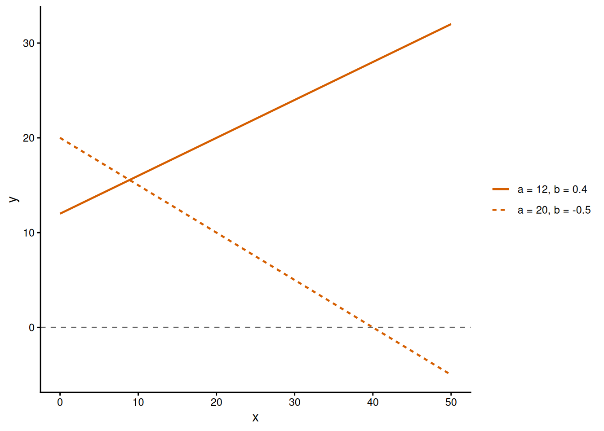
Linear functions with a = 12 and b = 0.4 (solid line) and with a = 20 and b = −0.5 (dashed line). The second line crosses zero at x = −a/b = 40.
ImportantPractice: sprint speed of a lizard
The sprint speed of a lizard is 1.2 m/s at a body temperature of 20 °C and 2.0 m/s at 30 °C. Find the parameters \(a\) and \(b\) of the straight line through these two points, with their units. Which speed does the line give at 5 °C, and what does that say about the range of temperatures over which it can be used?
TipSolution
The slope is the change in speed divided by the change in temperature, \(b=(2.0-1.2)/(30-20)=0.08\) m/s/°C. The intercept follows from one of the points: \(a=1.2-0.08\times20=-0.4\) m/s. At 5 °C the line gives \(-0.4+0.08\times5=0\) m/s, and below 5 °C it gives negative speeds. So \(-a/b=5\) °C is the lower end of the range over which this line can describe a speed, and the intercept \(a\) is the value of the line at 0 °C, a temperature at which it is of no use. Written around 20 °C the line is \(1.2+0.08(x-20)\).
2.2 Quadratic
\[
\begin{aligned}
\text{R}: &\quad \verb|a + b * x + c * x^2| \\
\text{Shape}: &\quad \text{unimodal when } c < 0;\ \text{U-shaped when } c > 0 \\
\text{Domain}: &\quad \text{all } x \\
\text{Range}: &\quad y \leq a - b^2/(4c) \text{ when } c < 0;\quad y \geq a - b^2/(4c) \text{ when } c > 0 \\
\text{Parameters}: &\quad a = \text{value at } x = 0 \text{ (units of } y\text{)};\quad
b = \text{slope at } x = 0;\quad c = \text{half of the second derivative} \\
\text{At zero}: &\quad f(0) = a,\ \text{slope } b \\
\text{At infinity}: &\quad \text{decreases without bound when } c < 0,\ \text{grows without bound when } c > 0 \\
\text{Special}: &\quad \text{maximum or minimum at } x_{\max} = -b/(2c),\ \text{with value } a - b^2/(4c) \\
\text{Also written}: &\quad f(x_{\max}) + c\,(x - x_{\max})^2
\end{aligned}
\]
The quadratic function, or parabola, is the simplest function with a maximum or a minimum. It is used as a phenomenological description of a response that is highest at intermediate values of the predictor (e.g., growth as a function of temperature), over a limited range of \(x\). It can also follow from geometry: a process that depends on a surface, such as the area of the skin or of the mouth, is quadratic in the length of the organism. Finally, every smooth function is close to a parabola near its maximum, which is the idea behind the Wald interval of Chapter 4.
Polynomials of a higher order (a cubic function has a term in \(x^3\), and so on) add one bend for every additional power and can follow almost any set of points. However, outside the range of the data they grow or decrease without bound, in a direction that is decided by the highest power alone, so their predictions there are unreliable.1 For that reason this supplement stops at the quadratic function.
The function is
\[
f(x)=a+bx+cx^2,
\]
where \(a\) is the value at \(x=0\), \(b\) is the slope at \(x=0\) (in units of \(y\) per unit of \(x\)) and \(c\) controls the curvature (in units of \(y\) per unit of \(x\) squared). The three parameters can be positive or negative. The first two derivatives are
\[
f'(x)=b+2cx, \qquad f''(x)=2c.
\]
The second derivative has the same sign everywhere. When \(c<0\) the function is concave for every \(x\) and its only critical point is a maximum; when \(c>0\) it is convex and the critical point is a minimum. Setting \(f'(x)=0\):
If we complete the square, we can write the function with these two landmarks as parameters,
\[
f(x)=f(x_{\max})+c\,(x-x_{\max})^2,
\]
which shows that the parabola is symmetric around \(x_{\max}\). It also shows that, when \(c<0\), the function crosses zero at \(x_{\max}\pm\sqrt{f(x_{\max})/(-c)}\) and is negative beyond those two values. A response that cannot be negative is therefore described by a quadratic function only between them.
2.2.1 Example: growth of a caterpillar and temperature
Suppose that the growth rate of a caterpillar (mg/day) as a function of temperature \(x\) (°C) is \(f(x)=-6+1.2x-0.03x^2\). The units of the parameters are mg/day for \(a\), mg/day/°C for \(b\) and mg/day/°C² for \(c\). The growth rate is highest at
so the function can be written as \(6-0.03(x-20)^2\). It crosses zero at \(20\pm\sqrt{6/0.03}=20\pm14.1\), that is, at 5.9 and 34.1 °C, and it describes a growth rate only between those temperatures. We can verify our math with R:
# Quadratic function: a is the value at x = 0, b the slope there, c the curvaturequadratic =function(x, a =0, b =0, c =1) { a + b * x + c * x^2}# Location and value of the maximum from the formulas-1.2/ (2*-0.03)
[1] 20
-6-1.2^2/ (4*-0.03)
[1] 6
# The same on a fine grid of temperaturestemperature_grid =seq(0, 40, by =0.01)growth_values =quadratic(temperature_grid, a =-6, b =1.2, c =-0.03)temperature_grid[which.max(growth_values)]
[1] 20
max(growth_values)
[1] 6
# Temperatures at which the function crosses zero (up to rounding error)zero_growth =20+c(-1, 1) *sqrt(6/0.03)zero_growth
[1] 5.857864 34.142136
quadratic(zero_growth, a =-6, b =1.2, c =-0.03)
[1] -8.881784e-16 0.000000e+00
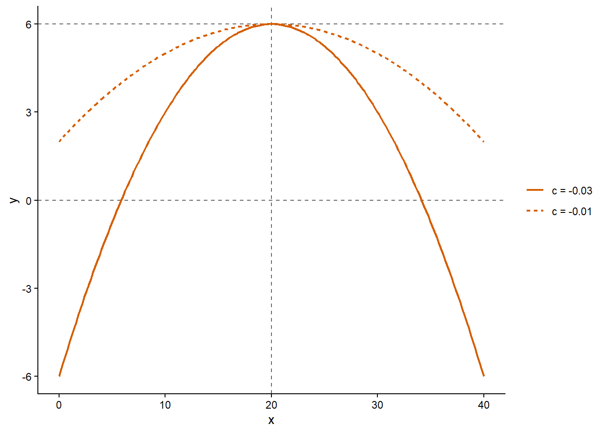
Quadratic functions with a maximum at x = 20 and a value of 6 there, for c = −0.03 (solid line; a = −6, b = 1.2) and c = −0.01 (dashed line; a = 2, b = 0.4). Dashed grey lines mark the maximum and the value zero.
ImportantPractice: species richness and productivity
The number of plant species in a grassland plot as a function of its productivity \(x\) (t/ha/year) is described by \(f(x)=10+4x-0.25x^2\). At which productivity is the number of species highest, and how many species does the function give there? Calculate the slope at \(x=0\) and at \(x=12\), with units. At which productivity does the function return to its value at \(x=0\)?
TipSolution
The maximum is at \(x_{\max}=-4/(2\times(-0.25))=8\) t/ha/year, where the function gives \(10+32-16=26\) species. The derivative is \(f'(x)=4-0.5x\), so the slope is 4 species/(t/ha/year) at \(x=0\) and \(4-6=-2\) species/(t/ha/year) at \(x=12\). The parabola is symmetric around its maximum, so it returns to \(f(0)=10\) species at twice the location of the maximum, \(x=16\) t/ha/year.
3 Piecewise functions
A piecewise function is defined by different formulas on different parts of its domain. The parts meet at a breakpoint, at which the function, its slope or both change abruptly. In R these functions are written with ifelse() (see Functions in R).
3.1 Threshold
\[
\begin{aligned}
\text{R}: &\quad \texttt{ifelse(x < c, a, b)} \\
\text{Shape}: &\quad \text{step} \\
\text{Domain}: &\quad \text{all } x \\
\text{Range}: &\quad y = a \text{ or } y = b \\
\text{Parameters}: &\quad a = \text{value below the threshold (units of } y\text{)};\quad
b = \text{value from the threshold onwards (units of } y\text{)}; \\
&\quad c = \text{threshold (units of } x\text{)} \\
\text{At the left end}: &\quad f(x) = a,\ \text{slope } 0 \\
\text{At infinity}: &\quad f(x) = b,\ \text{slope } 0 \\
\text{Special}: &\quad \text{jump of size } b - a \text{ at } x = c \\
\text{Also written}: &\quad \text{the limit of } a + \dfrac{b - a}{1 + e^{-s(x - c)}} \text{ as } s \to \infty,\ \text{for } x \neq c
\end{aligned}
\]
The threshold function describes a response that switches between two levels when the predictor crosses a critical value. It is used when an organism changes its behaviour or its state abruptly, for example the number of eggs that a parasitoid lays on a host as a function of the number of eggs that it carries (Hilborn and Mangel 1997; the original study of Rosenheim and Rosen 1991 used a logistic function), and more generally for the sharp transitions between strategies that models of optimal behaviour predict (Hilborn and Mangel 1997). The function is mechanistic when theory predicts such a switch, and otherwise it is the simplest phenomenological description of two levels. Chapter 8 uses a threshold function to show what a jump does to a likelihood.
The function is
\[
f(x)=
\begin{cases}
a & \text{if } x<c \\
b & \text{if } x\ge c,
\end{cases}
\]
where \(a\) and \(b\) are the two levels, which can take any value, and \(c\) is the threshold. The formula has to say to which side the value \(x=c\) belongs; here it belongs to the upper piece. There is nothing to derive with calculus. The two limits are the two levels, and the slope is zero everywhere except at \(x=c\), where the function jumps by \(b-a\) and has no derivative. This has a consequence for estimation: moving \(c\) by a small amount changes the function only if an observation lies between the old and the new threshold, so the methods that search for an optimum by following a slope fail for \(c\) (Chapter 8).
A smooth function that approaches the threshold function is the logistic function with a lower level \(a\),
\[
f(x)=a+\frac{b-a}{1+e^{-s(x-c)}},
\]
where \(s\) is the steepness. The larger \(s\) is, the shorter the range of \(x\) over which the function moves from \(a\) to \(b\), and as \(s\to\infty\) it becomes the threshold function everywhere except at the breakpoint: at \(x=c\) the logistic function equals \((a+b)/2\) for every \(s\), whereas the threshold function equals \(b\).
3.1.1 Example: foraging of bumblebees and temperature
Suppose that the workers of a bumblebee colony stay in the nest below 10 °C and make 6 foraging trips/hour from that temperature onwards. With \(x\) the air temperature, \(a=0\) trips/hour, \(b=6\) trips/hour and \(c=10\) °C. The function gives 0 trips/hour at 8 °C and 6 trips/hour at 10 °C and at 14 °C. A logistic function with a steepness \(s=5\)/°C gives, half a degree below and half a degree above the threshold,
trips/hour, so it completes most of the switch within one degree. We can verify our math with R:
# Threshold function: a below the threshold c and b from the threshold onwardsthreshold =function(x, a =0, b =1, c =1) {ifelse(x < c, a, b)}# Foraging trips/hour at 8, 10 and 14 degreesthreshold(x =c(8, 10, 14), a =0, b =6, c =10)
[1] 0 6 6
# A logistic function with lower level a, upper level b and steepness ssmooth_threshold =function(x, a =0, b =1, c =1, s =1) { a + (b - a) / (1+exp(-s * (x - c)))}# Half a degree below and above the threshold, for a steepness of 5/°C and of 50/°Csmooth_threshold(x =c(9.5, 10.5), a =0, b =6, c =10, s =5)
[1] 0.4551491 5.5448509
smooth_threshold(x =c(9.5, 10.5), a =0, b =6, c =10, s =50)
[1] 8.332766e-11 6.000000e+00
With \(s=50\)/°C the logistic function is indistinguishable from the threshold function at these two temperatures.
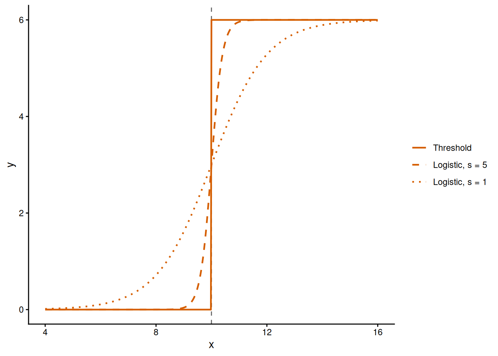
Threshold function with a = 0, b = 6 and c = 10 (solid line) and logistic functions between the same two levels with a steepness s = 1 (dotted line) and s = 5 (dashed line). The dashed grey line marks the threshold.
ImportantPractice: seedling survival and soil water
The probability that a seedling survives the summer is 0.2 when the water content of the soil is below 15% and 0.9 otherwise. Write this function as a formula and as a call to ifelse(). What is the average survival probability over four plots with a water content of 10, 14, 15 and 22%? What is the slope of the function at 20%?
TipSolution
The function is \(f(x)=0.2\) if \(x<15\) and \(f(x)=0.9\) if \(x\ge15\), that is, ifelse(x < 15, 0.2, 0.9). The four plots have survival probabilities of 0.2, 0.2, 0.9 and 0.9 (the plot at exactly 15% belongs to the upper piece), so the average is \((0.2+0.2+0.9+0.9)/4=0.55\). The slope at 20% is zero: away from the threshold a change in water content has no effect on survival.
3.2 Hockey stick
\[
\begin{aligned}
\text{R}: &\quad \texttt{ifelse(x < c, a * x, a * c)} \quad \text{or} \quad \texttt{pmin(a * x, a * c)} \\
\text{Shape}: &\quad \text{saturating, with a sharp corner} \\
\text{Domain}: &\quad \text{all } x \quad (x \geq 0 \text{ in most uses}) \\
\text{Range}: &\quad y \leq ac \\
\text{Parameters}: &\quad a = \text{slope below the breakpoint (units of } y \text{ per unit of } x\text{)};\quad
c = \text{breakpoint (units of } x\text{)} \\
\text{At zero}: &\quad f(0) = 0,\ \text{slope } a \\
\text{At infinity}: &\quad f(x) = ac,\ \text{slope } 0 \\
\text{Special}: &\quad \text{breakpoint at } x = c,\ \text{where the slope changes from } a \text{ to } 0 \\
\text{Also written}: &\quad \min(ax, d),\ \text{with } d = ac \text{ the plateau}
\end{aligned}
\]
The hockey stick function describes a response that increases in proportion to the predictor until it hits a ceiling. It has a mechanistic reading when a process runs at a constant rate per unit of \(x\) until a capacity is reached, as for filter feeders that take up food in proportion to its concentration until they reach a maximum uptake (the Holling type I functional response). It is also used for the number of recruits as a function of the size of the spawning stock in fisheries (Barrowman and Myers 2000), for the density dependence of populations of lemmings, sheep and moose (Framstad et al. 1997; Grenfell et al. 1998; Post et al. 2002; Brännström and Sumpter 2005) and to locate the edges between habitats in a landscape (Toms and Lesperance 2003). Bacon and Watts (1971, 1974) studied how to estimate the transition between two straight lines from data.
where \(a\) is the slope of the first piece and \(c\) is the breakpoint. The two pieces meet at \(x=c\), where both give \(ac\), so the function has no jump. Its slope does: the derivative is \(a\) for \(x<c\) and 0 for \(x>c\), and it does not exist at the breakpoint. The plateau \(ac\) can be used as a parameter in the place of the breakpoint, which gives \(\min(ax,d)\) with \(d=ac\): the smaller of the straight line and the plateau, pmin() in R.
It is instructive to compare the hockey stick with the Michaelis–Menten function that has the same initial slope \(a\) and the same upper limit \(ac\), which is \(acx/(c+x)\). At \(x=c\) the hockey stick has reached its plateau, whereas the Michaelis–Menten function is at half of it: the breakpoint of the one is the half-maximum of the other. The two functions are the extremes of a family with a bend of adjustable sharpness, the non-rectangular hyperbola.
3.2.1 Example: uptake of algae by a mussel
Suppose that a mussel clears the algae from 1.5 L/hour of water, up to a concentration of 40 µg/L of carbon, beyond which its uptake stays constant. With \(x\) the concentration of algae (µg/L of carbon) and \(f(x)\) the uptake (µg/hour of carbon), \(a=1.5\) L/hour and \(c=40\) µg/L. The plateau is \(ac=1.5\times40=60\) µg/hour. The uptake is
µg/hour of carbon. The Michaelis–Menten function with the same initial slope and upper limit, \(60x/(40+x)\), gives 12, 30 and 42.9 µg/hour at those concentrations. We can verify our math with R:
# Hockey stick function: slope a up to the breakpoint c, then the plateau a * chockey_stick =function(x, a =1, c =1) {ifelse(x < c, a * x, a * c)}# Uptake at 10, 40 and 100 µg/L of carbonconcentrations =c(10, 40, 100)hockey_stick(x = concentrations, a =1.5, c =40)
[1] 15 60 60
# The same with pmin(): the smaller of the line and the plateaupmin(1.5* concentrations, 60)
[1] 15 60 60
# Michaelis–Menten function with the same initial slope and upper limit60* concentrations / (40+ concentrations)
[1] 12.00000 30.00000 42.85714
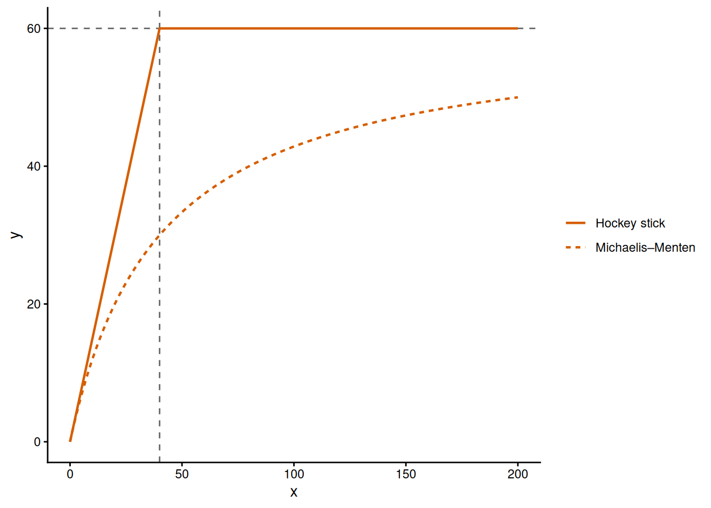
Hockey stick function with a = 1.5 and c = 40 (solid line) and the Michaelis–Menten function with the same initial slope and upper limit (dashed line). Dashed grey lines mark the breakpoint and the plateau ac = 60.
ImportantPractice: recruits and spawners
The number of recruits of a fish stock increases by 3 recruits per spawner and levels off at 600 recruits. Where is the breakpoint of this hockey stick function? How many recruits does it give for 150 and for 450 spawners? Write the function with pmin().
TipSolution
The plateau is \(ac=600\) recruits and the slope is \(a=3\) recruits per spawner, so the breakpoint is at \(c=600/3=200\) spawners. For 150 spawners, below the breakpoint, the function gives \(3\times150=450\) recruits, and for 450 spawners it gives the plateau of 600 recruits. In R the function is pmin(3 * x, 600).
3.3 Piecewise linear
\[
\begin{aligned}
\text{R}: &\quad \texttt{ifelse(x < c, a + b * x, a + b * c + d * (x - c))} \\
\text{Shape}: &\quad \text{two straight lines that meet at a corner} \\
\text{Domain}: &\quad \text{all } x \\
\text{Range}: &\quad \text{all } y \text{ when } b \text{ and } d \text{ have the same sign};\quad
y \leq a + bc \text{ when } b > 0 > d \\
\text{Parameters}: &\quad a = \text{value at } x = 0 \text{ (units of } y\text{)};\quad
b = \text{slope below the breakpoint (units of } y \text{ per unit of } x\text{)}; \\
&\quad c = \text{breakpoint (units of } x\text{)};\quad
d = \text{slope above the breakpoint (units of } y \text{ per unit of } x\text{)} \\
\text{At zero}: &\quad f(0) = a,\ \text{slope } b \quad (c > 0) \\
\text{At infinity}: &\quad \text{grows or decreases without bound, slope } d \\
\text{Special}: &\quad \text{breakpoint at } x = c,\ \text{with value } a + bc,\ \text{where the slope changes from } b \text{ to } d \\
\text{Also written}: &\quad a + bx + (d - b)\max(0,\, x - c)
\end{aligned}
\]
The piecewise linear function describes a response that changes at one constant rate up to a breakpoint and at another constant rate beyond it. It is the general form of the functions of this group that have no jump: the hockey stick is the case in which the first line starts at zero and the second one is flat. The function is used when an organism is expected to switch from one regime to another at some value of the predictor, for example from growing to reproducing once it has reached a certain size or age, and to locate ecological thresholds in data (Toms and Lesperance 2003). It is mechanistic when theory predicts the switch, and otherwise a phenomenological description of a relationship that bends once.
where \(a\) is the value at \(x=0\), \(b\) is the slope below the breakpoint \(c\) and \(d\) is the slope above it. The parameters \(a\), \(b\) and \(d\) can be positive or negative. The second piece starts at \(a+bc\), which is the value that the first piece reaches at \(x=c\), so the two lines meet and the function has no jump. Its derivative is \(b\) for \(x<c\) and \(d\) for \(x>c\), and it does not exist at the breakpoint. When \(b\) and \(d\) have opposite signs the breakpoint is the maximum (\(b>0>d\)) or the minimum (\(b<0<d\)) of the function, and it is one that we cannot find by setting a derivative to zero.
The function can be written on a single line. The second piece is the first line plus a correction of the slope that applies only beyond the breakpoint,
\[
f(x)=a+bx+(d-b)\max(0,\,x-c),
\]
where \(\max(0,x-c)\) is zero up to the breakpoint and equal to the distance from it afterwards (pmax(0, x - c) in R). In this form \(d-b\) is the change in slope at the breakpoint, and a function with several breakpoints is obtained by adding one such term for each of them.
A piecewise linear function with many breakpoints can follow any relationship, at the cost of a corner at each breakpoint. Splines remove the corners: they are piecewise cubic functions whose pieces join smoothly at points called knots. They are used when we want a smooth curve through the data and do not need to interpret its parameters (Wood 2001, 2006), so they are not described further in this supplement.
3.3.1 Example: growth of a fish before and after maturity
Suppose that a fish is 4 cm long when it hatches, grows by 8 cm/year until it matures at an age of 3 years, and by 2 cm/year afterwards, when part of its energy goes to reproduction. With \(x\) the age in years and \(f(x)\) the length in cm, \(a=4\) cm, \(b=8\) cm/year, \(c=3\) years and \(d=2\) cm/year. The length at maturity is \(a+bc=4+8\times3=28\) cm, and
The fish reaches 40 cm when \(28+2(x-3)=40\), that is, at an age of \(x=3+12/2=9\) years. The change in slope at maturity is \(d-b=-6\) cm/year. We can verify our math with R:
# Piecewise linear function: value a at x = 0, slope b up to the breakpoint c# and slope d from the breakpoint onwardspiecewise_linear =function(x, a =0, b =1, c =1, d =0) {ifelse(x < c, a + b * x, a + b * c + d * (x - c))}# Length (cm) at 2, 3 and 6 yearsages =c(2, 3, 6)piecewise_linear(x = ages, a =4, b =8, c =3, d =2)
[1] 20 28 34
# The same on a single line, with pmax()4+8* ages + (2-8) *pmax(0, ages -3)
[1] 20 28 34
# Age at which the fish is 40 cm long, and its length at that age3+ (40-28) /2
[1] 9
piecewise_linear(x =9, a =4, b =8, c =3, d =2)
[1] 40
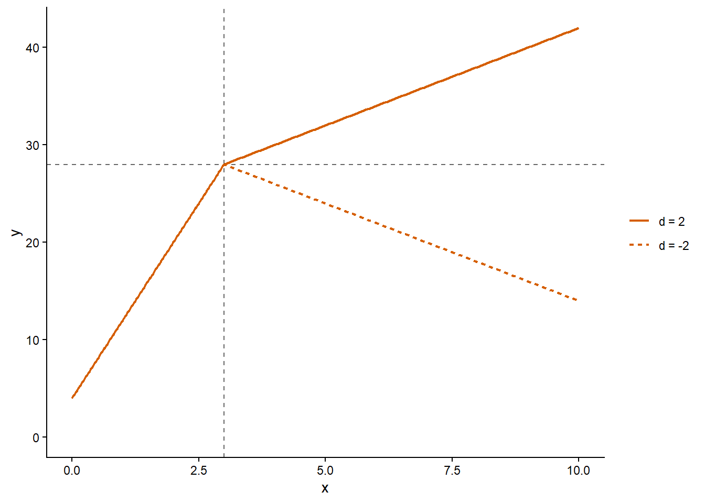
Piecewise linear functions with a = 4, b = 8 and c = 3, for a slope above the breakpoint d = 2 (solid line) and d = −2 (dashed line). Dashed grey lines mark the breakpoint and the value a + bc = 28 that both functions have there; with d < 0 the breakpoint is the maximum.
ImportantPractice: bird species and forest cover
The number of bird species in a landscape is 5 without forest and increases by 0.2 species for every percent of forest cover up to a cover of 30%, and by 0.05 species per percent beyond that. How many species does this piecewise linear function give at a cover of 30% and of 100%? At which cover does it give 13 species? Write the function on a single line with pmax().
TipSolution
The parameters are \(a=5\) species, \(b=0.2\) species per percent, \(c=30\)% and \(d=0.05\) species per percent. At the breakpoint the function gives \(a+bc=5+0.2\times30=11\) species, and at a cover of 100% it gives \(11+0.05\times(100-30)=14.5\) species. Since 13 species is more than the value at the breakpoint, we solve \(11+0.05(x-30)=13\), which gives \(x=30+2/0.05=70\)%. The change in slope is \(d-b=-0.15\) species per percent, so in R the function is 5 + 0.2 * x - 0.15 * pmax(0, x - 30).
4 Rational functions
A rational function is a ratio of two polynomials. Its limit as \(x\to\infty\) is found by dividing the numerator and the denominator by the highest power of \(x\) (see Limits and asymptotes). Rational functions approach their limits slowly, in proportion to a power of \(x\).
4.1 Hyperbolic
\[
\begin{aligned}
\text{R}: &\quad \texttt{a / (b + x)} \\
\text{Shape}: &\quad \text{decreasing, convex} \\
\text{Domain}: &\quad x \geq 0 \\
\text{Range}: &\quad 0 < y \leq a/b \\
\text{Parameters}: &\quad a = \text{numerator (units of } y \text{ times units of } x\text{)};\quad
b = \text{value of } x \text{ at which the function has halved (units of } x\text{)} \\
\text{At zero}: &\quad f(0) = a/b,\ \text{slope } -a/b^2 \\
\text{At infinity}: &\quad f(x) \to 0,\ \text{slope} \to 0 \\
\text{Special}: &\quad \text{half of the initial value at } x = b \\
\text{Also written}: &\quad \dfrac{y_0}{1 + x/b},\ \text{with } y_0 = a/b \text{ the value at } x = 0
\end{aligned}
\]
The hyperbolic function describes a response that declines towards zero, fast at first and then more and more slowly. It is used for the performance of an individual as a function of the density of its neighbours, for example the number of seeds that a plant produces as a function of the number of plants around it (Pacala and Silander 1987, 1990). The constant \(b\) in the denominator keeps the function finite at \(x=0\), where the simpler form \(a/x\) would be infinite. A mechanistic derivation exists when a total saturates: if the total seed production of a stand follows the Michaelis–Menten function \(ax/(b+x)\) of its density \(x\), the production per plant is that total divided by \(x\), which is \(a/(b+x)\).
The function is
\[
f(x)=\frac{a}{b+x},
\]
where \(b\) has the units of \(x\) and \(a\) has the units of \(y\) multiplied by those of \(x\). At \(x=0\) the function equals \(a/b\), and as \(x\to\infty\) the denominator grows without bound, so \(f(x)\to0\). For large \(x\) the function is close to \(a/x\). Writing it as \(a(b+x)^{-1}\), the power rule and the chain rule give
The slope is negative and the second derivative positive for every \(x\ge0\), so the function decreases and is convex everywhere. Its steepest slope is the one at zero, \(-a/b^2\). The parameter \(b\) is a scale parameter (see Half-maxima and characteristic scales): if we solve \(a/(b+x)=a/(2b)\) for \(x\) we find \(x=b\), so \(b\) is the value of \(x\) at which the function has fallen to half of its initial value. In the same way it has fallen to a third at \(x=2b\) and to a quarter at \(x=3b\). Since the value at zero is easier to read from a plot than \(a\), the function is also written as \(y_0/(1+x/b)\) with \(y_0=a/b\).
4.1.1 Example: plant biomass and density
Suppose that the mean biomass of a plant (g per plant) in a pot with \(x\) plants is \(f(x)=60/(5+x)\), so that \(b=5\) plants per pot and \(a=60\) g per pot. A plant without neighbours would weigh \(f(0)=60/5=12\) g. The biomass per plant is
half and a quarter of that value. The slope at zero is \(-60/5^2=-2.4\) g per plant for every additional plant in the pot. The total biomass in the pot is \(x\,f(x)=60x/(5+x)\), a Michaelis–Menten function that approaches \(a=60\) g per pot, which gives \(a\) its meaning here: it is the highest biomass that a pot can hold. We can verify our math with R:
# Hyperbolic function: starts at a / b and has halved at x = bhyperbolic =function(x, a =1, b =1) { a / (b + x)}# Biomass per plant (g) without neighbours, at 5 and at 15 plants per pothyperbolic(x =c(0, 5, 15), a =60, b =5)
[1] 12 6 3
# Slope at zero: D() and the formula derived on paperhyperbolic_derivative =D(expression(a / (b + x)), "x")eval(hyperbolic_derivative, list(a =60, b =5, x =0))
[1] -2.4
-60/5^2
[1] -2.4
# Total biomass per pot (g) at 5, 15 and 1000 plants per potc(5, 15, 1000) *hyperbolic(x =c(5, 15, 1000), a =60, b =5)
[1] 30.00000 45.00000 59.70149
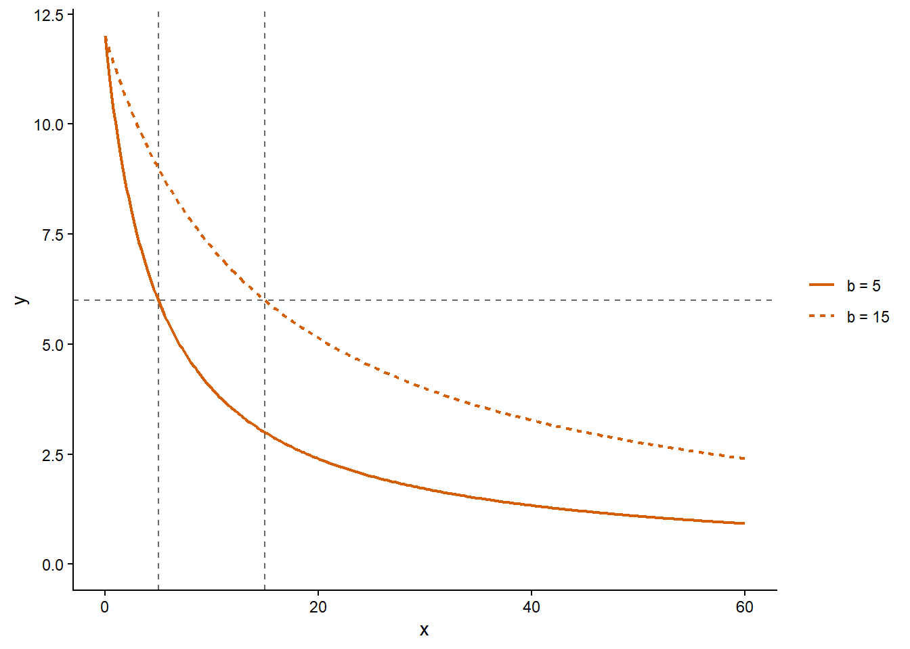
Hyperbolic functions that start at a/b = 12, with b = 5 (solid line; a = 60) and b = 15 (dashed line; a = 180). Dashed grey lines mark half of the initial value, which each function reaches at x = b.
ImportantPractice: seed production and neighbours
An isolated plant of an annual weed produces 200 seeds, and a plant with 8 neighbours per m² produces half of that. Find the parameters \(a\) and \(b\) of a hyperbolic function with these properties, with their units. At which density of neighbours does a plant produce 50 seeds?
TipSolution
The function has halved at \(x=b\), so \(b=8\) plants/m². The value at zero is \(a/b=200\) seeds, so \(a=200\times8=1600\) seeds times plants/m². For 50 seeds we solve \(1600/(8+x)=50\), which gives \(8+x=32\) and \(x=24\) plants/m². That is \(3b\), the density at which the function has fallen to a quarter of its initial value.
4.2 Michaelis–Menten
\[
\begin{aligned}
\text{R}: &\quad \texttt{a * x / (b + x)} \\
\text{Shape}: &\quad \text{saturating} \\
\text{Domain}: &\quad x \geq 0 \\
\text{Range}: &\quad 0 \leq y < a \\
\text{Parameters}: &\quad a = \text{asymptote (units of } y\text{)};\quad
b = \text{half-maximum (units of } x\text{)} \\
\text{At zero}: &\quad f(0) = 0,\ \text{slope } a/b \\
\text{At infinity}: &\quad f(x) \to a,\ \text{slope} \to 0 \\
\text{Special}: &\quad \text{half-maximum at } x = b \\
\text{Also written}: &\quad \dfrac{\alpha x}{1 + \alpha Hx},\ \text{with } a = 1/H \text{ and } b = 1/(\alpha H)
\end{aligned}
\]
The Michaelis–Menten function describes a response that increases in proportion to the predictor when the predictor is scarce and levels off when it is abundant, because something else then limits the response. It is one of the two functions of Chapter 5, where its properties are derived step by step, and it has a different name in almost every field that uses it. In biochemistry it is the rate of a reaction catalysed by an enzyme as a function of the concentration of the substrate (Michaelis and Menten 1913), with the parameters written as \(v_{\max}\) and \(K_m\). In microbiology it is the Monod equation for the growth rate of micro-organisms on a limiting nutrient (Monod 1949). In fisheries it is the Beverton–Holt curve for the number of recruits as a function of the size of the spawning stock (Beverton and Holt 1957). In ecology it is best known as the Holling type II functional response, the feeding rate of a predator as a function of the density of its prey (Holling 1959).
The function is mechanistic in each of these uses. Chapter 5 derives it for a predator that divides its time between searching for prey and handling them, and the Beverton–Holt curve follows from a mortality rate of the young fish that increases linearly with their density (Quinn and Deriso 1999). The function is also used phenomenologically for any response that rises from zero and saturates.
The function is
\[
f(x)=\frac{ax}{b+x},
\]
where \(a\) is the asymptote, with the units of \(y\), and \(b\) is the half-maximum, with the units of \(x\). Chapter 5 shows that \(f(0)=0\) and \(f(x)\to a\) as \(x\to\infty\), and that
so the function increases and is concave for every \(x\ge0\), with an initial slope of \(a/b\). To find the value of \(x\) at which the function reaches a fraction \(p\) of its asymptote we solve \(f(x_p)=pa\):
For \(p=1/2\) this gives the half-maximum, \(x_{1/2}=b\). For \(p=0.9\) it gives \(9b\) and for \(p=0.95\) it gives \(19b\): the function approaches its asymptote slowly, and data that stop at a few times the half-maximum are still far below it.
The parameterisations in use differ in which two landmarks they take as parameters (see Reparameterisation):
Parameters
Formula
Conversion
Asymptote \(a\) and half-maximum \(b\)
\(\dfrac{ax}{b+x}\)
Attack rate \(\alpha\) and handling time \(H\) (Holling type II)
\(\dfrac{\alpha x}{1+\alpha Hx}\)
\(a=1/H\), \(b=1/(\alpha H)\)
Asymptote \(a\) and initial slope \(s\)
\(\dfrac{asx}{a+sx}\)
\(s=a/b\)
The attack rate \(\alpha\) of the second form is the initial slope \(s\) of the third one.
4.2.1 Example: growth of algae and phosphate
Suppose that the growth rate of a population of algae (1/day) as a function of the concentration of phosphate \(x\) (µmol/L) is \(f(x)=1.2x/(0.5+x)\). The asymptote is \(a=1.2\)/day and the half-maximum is \(b=0.5\) µmol/L. The growth rate is
half and 80% of the asymptote (note that \(2=4b\), which is \(p/(1-p)\) times \(b\) for \(p=0.8\)). The initial slope is \(a/b=2.4\) (1/day)/(µmol/L), and the algae need \(19b=9.5\) µmol/L to grow at 95% of their maximum rate. We can verify our math with R:
# Michaelis–Menten function: asymptote a and half-maximum bmichaelis_menten =function(x, a =1, b =1) { a * x / (b + x)}# Growth rate (1/day) at 0.5 and 2 µmol/Lmichaelis_menten(x =c(0.5, 2), a =1.2, b =0.5)
[1] 0.60 0.96
# Concentrations at which the function reaches 80%, 90% and 95% of its asymptotefractions =c(0.8, 0.9, 0.95)fractions / (1- fractions) *0.5
[1] 2.0 4.5 9.5
michaelis_menten(x =c(2, 4.5, 9.5), a =1.2, b =0.5) /1.2
[1] 0.80 0.90 0.95
# The same function written with the attack rate and the handling time,# and with the asymptote and the initial slopealpha =1.2/0.5H =1/1.2alpha *c(0.5, 2) / (1+ alpha * H *c(0.5, 2))
[1] 0.60 0.96
1.2*2.4*c(0.5, 2) / (1.2+2.4*c(0.5, 2))
[1] 0.60 0.96
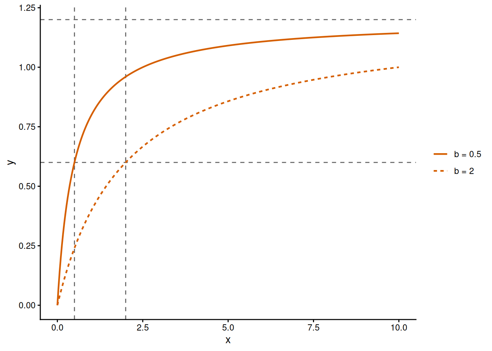
Michaelis–Menten functions with an asymptote a = 1.2 (dashed grey line) and a half-maximum b = 0.5 (solid line) and b = 2 (dashed line). Vertical dashed lines mark the two half-maxima, at which each function reaches a/2 = 0.6.
ImportantPractice: nectar intake of a bumblebee
The nectar intake of a bumblebee (µL/min) increases with the density of flowers and approaches 50 µL/min. At a density of 12 flowers/m² the intake is 40 µL/min. Find the half-maximum \(b\) of a Michaelis–Menten function with these properties. What is its initial slope, and which density of flowers gives 90% of the maximum intake?
TipSolution
An intake of 40 µL/min is a fraction \(p=0.8\) of the asymptote \(a=50\) µL/min, and that fraction is reached at \(x_p=\dfrac{p}{1-p}\,b=4b\). So \(4b=12\) and \(b=3\) flowers/m². The initial slope is \(a/b=50/3\approx16.7\) (µL/min)/(flowers/m²), and 90% of the maximum intake requires \(9b=27\) flowers/m².
4.3 Holling type III
\[
\begin{aligned}
\text{R}: &\quad \verb|a * x^2 / (b^2 + x^2)| \\
\text{Shape}: &\quad \text{sigmoid} \\
\text{Domain}: &\quad x \geq 0 \\
\text{Range}: &\quad 0 \leq y < a \\
\text{Parameters}: &\quad a = \text{asymptote (units of } y\text{)};\quad
b = \text{half-maximum (units of } x\text{)} \\
\text{At zero}: &\quad f(0) = 0,\ \text{slope } 0 \\
\text{At infinity}: &\quad f(x) \to a,\ \text{slope} \to 0 \\
\text{Special}: &\quad \text{half-maximum at } x = b;\ \text{inflection point at } x = b/\sqrt{3},\ \text{with value } a/4 \\
\text{Also written}: &\quad \dfrac{\alpha x^2}{1 + \alpha Hx^2},\ \text{with } a = 1/H \text{ and } b = 1/\sqrt{\alpha H}
\end{aligned}
\]
The Holling type III function describes a response that increases slowly when the predictor is scarce, accelerates and then levels off. It is the Michaelis–Menten function with \(x\) replaced by \(x^2\) and the half-maximum by its square, which turns a saturating function into a sigmoid one. As a functional response it describes predators that kill a smaller proportion of the prey when the prey are rare, which can result from predators that switch from rare to common prey, from predators that aggregate where prey are abundant and from other forms of heterogeneity (Morris 1997). A mechanistic derivation exists: if the attack rate of the disc equation is proportional to the density of the prey, \(\alpha x\) in the place of \(\alpha\), the equation becomes \(\alpha x^2/(1+\alpha Hx^2)\).
The function is
\[
f(x)=\frac{ax^2}{b^2+x^2},
\]
where \(a\) is the asymptote, with the units of \(y\), and \(b\) is the half-maximum, with the units of \(x\). At \(x=0\) the function is zero. For small \(x\) the denominator is close to \(b^2\), so \(f(x)\approx(a/b^2)\,x^2\): the function starts as a parabola, with a slope of zero. Dividing the numerator and the denominator by \(x^2\) gives \(a/(b^2/x^2+1)\), which tends to \(a\) as \(x\to\infty\). The quotient rule gives
The slope is positive for every \(x>0\), so the function increases. The second derivative is zero where \(b^2-3x^2=0\), positive below that value and negative above it, so the inflection point is at
where the slope has its largest value, \(3\sqrt{3}\,a/(8b)\approx0.65\,a/b\). Unlike the logistic function, the Holling type III function is asymmetric: it is steepest at a quarter of its asymptote.
To find where the function reaches a fraction \(p\) of its asymptote we solve \(x_p^2=p\left(b^2+x_p^2\right)\), which gives
\[
x_p=b\sqrt{\frac{p}{1-p}}.
\]
For \(p=1/2\) this is the half-maximum, \(x_{1/2}=b\), and for \(p=0.9\) it is \(3b\), against \(9b\) for the Michaelis–Menten function: the square makes the function approach its asymptote faster. In the form with the attack rate, \(H\) is the handling time and \(\alpha\) has the units of \(y\) per unit of \(x\) squared, with \(a=1/H\) and \(b=1/\sqrt{\alpha H}\).
4.3.1 Example: a bird that feeds on caterpillars
Suppose that the number of caterpillars that a bird eats per hour, as a function of the density of caterpillars \(x\) (caterpillars/m²), is \(f(x)=40x^2/(36+x^2)\). The asymptote is \(a=40\) caterpillars/hour and the half-maximum is \(b=6\) caterpillars/m². At a density of 2, 6 and 18 caterpillars/m² the bird eats
caterpillars/hour, that is, 10%, 50% and 90% of the asymptote. A Michaelis–Menten function with the same parameters gives \(40\times2/(6+2)=10\) caterpillars/hour at the lowest of these densities, more than twice as many. The intake increases fastest at \(6/\sqrt{3}\approx3.5\) caterpillars/m², where it is \(a/4=10\) caterpillars/hour and increases by \(3\sqrt{3}\times40/(8\times6)\approx4.3\) caterpillars/hour for every additional caterpillar per m². We can verify our math with R:
# Holling type III function: asymptote a and half-maximum bholling_3 =function(x, a =1, b =1) { a * x^2/ (b^2+ x^2)}# Caterpillars eaten per hour at 2, 6 and 18 caterpillars/m²holling_3(x =c(2, 6, 18), a =40, b =6)
[1] 4 20 36
# Michaelis–Menten function with the same parameters at the lowest density40*2/ (6+2)
[1] 10
# Inflection point: location, value, and slope from D() and from the formulax_inflection =6/sqrt(3)x_inflection
[1] 3.464102
holling_3(x = x_inflection, a =40, b =6)
[1] 10
holling_3_derivative =D(expression(a * x^2/ (b^2+ x^2)), "x")eval(holling_3_derivative, list(a =40, b =6, x = x_inflection))
[1] 4.330127
3*sqrt(3) *40/ (8*6)
[1] 4.330127
# The second derivative is zero (up to rounding error) at the inflection pointeval(D(holling_3_derivative, "x"), list(a =40, b =6, x = x_inflection))
[1] -2.220446e-16
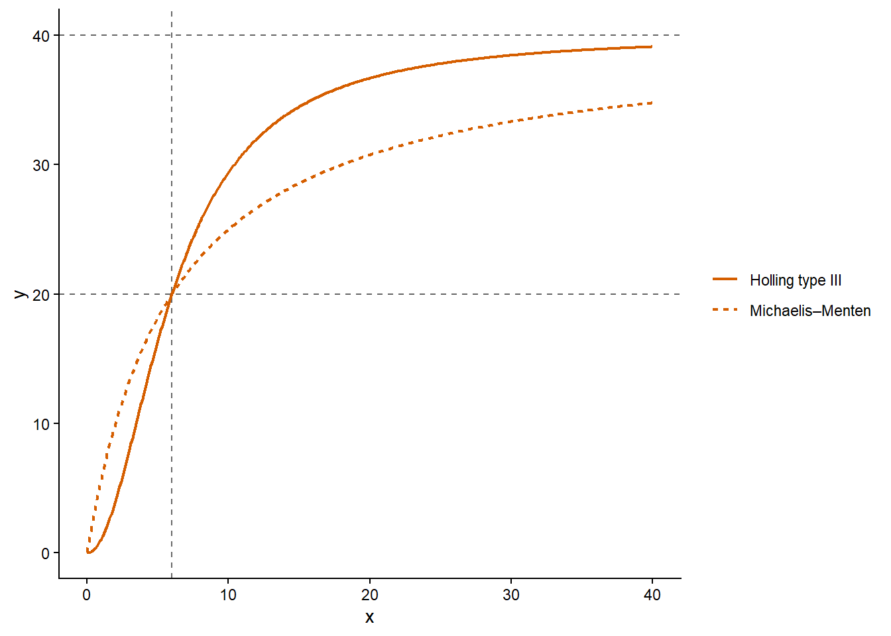
Holling type III function with an asymptote a = 40 and a half-maximum b = 6 (solid line) and the Michaelis–Menten function with the same parameters (dashed line). Dashed grey lines mark the asymptote, half of it and the half-maximum, which the two functions share.
ImportantPractice: a kestrel that hunts voles
The number of voles that a kestrel kills per week approaches 12 at high densities of voles, and it is 6 voles/week at a density of 20 voles/ha. Find the parameters of a Holling type III function with these properties, with their units. At which density does the kill rate increase fastest, and what is the kill rate there? Which density gives 80% of the maximum kill rate?
TipSolution
The asymptote is \(a=12\) voles/week, and half of it is reached at the half-maximum, so \(b=20\) voles/ha. The kill rate increases fastest at the inflection point, \(b/\sqrt{3}=20/1.732\approx11.5\) voles/ha, where it is \(a/4=3\) voles/week. A fraction \(p=0.8\) of the asymptote is reached at \(b\sqrt{p/(1-p)}=20\sqrt{4}=40\) voles/ha.
4.4 Holling type IV
\[
\begin{aligned}
\text{R}: &\quad \verb|a * x^2 / (b + c * x + x^2)| \\
\text{Shape}: &\quad \text{sigmoid when } c \geq 0;\ \text{unimodal, with an asymptote, when } c < 0 \\
\text{Domain}: &\quad x \geq 0 \\
\text{Range}: &\quad 0 \leq y < a \text{ when } c \geq 0;\quad 0 \leq y \leq 4ab/(4b - c^2) \text{ when } c < 0 \\
\text{Parameters}: &\quad a = \text{asymptote (units of } y\text{)};\quad
b > 0 \text{ (units of } x \text{ squared)};\quad c \text{ (units of } x\text{), with } c^2 < 4b \text{ when } c < 0 \\
\text{At zero}: &\quad f(0) = 0,\ \text{slope } 0 \\
\text{At infinity}: &\quad f(x) \to a,\ \text{from below when } c \geq 0 \text{ and from above when } c < 0 \\
\text{Special}: &\quad \text{when } c < 0,\ \text{maximum at } x = -2b/c \text{ with value } 4ab/(4b - c^2) \\
\text{Also written}: &\quad \text{with } c = 0,\ \text{the Holling type III function } ax^2/(b + x^2)
\end{aligned}
\]
The Holling type IV function adds a term in \(x\) to the denominator of the Holling type III function, and the sign of its parameter \(c\) decides the shape. When \(c>0\) the function is sigmoid, and it has a mechanistic derivation: it is the functional response of a predator whose attack rate is itself a Michaelis–Menten function of the density of the prey, that is, a predator that pursues prey more actively when they are abundant (Turchin 2003). When \(c<0\) the function rises above its asymptote, reaches a maximum and declines towards the asymptote. In that form it is used phenomenologically for the intake of a consumer that declines at high density, as a result of interference among predators or of defences induced in the prey (Holt 1983; Collings 1997; Wilmshurst et al. 1999; Chen 2004).
The function is
\[
f(x)=\frac{ax^2}{b+cx+x^2},
\]
where \(a\) is the asymptote, \(b\) is positive and has the units of \(x\) squared, and \(c\) has the units of \(x\) and can be positive or negative. Note that \(b\) is here the counterpart of \(b^2\) in the Holling type III function. The limits are found as for that function: \(f(0)=0\) with a slope of zero, since \(f(x)\approx(a/b)\,x^2\) for small \(x\), and \(f(x)\to a\) as \(x\to\infty\), since dividing by \(x^2\) gives \(a/(b/x^2+c/x+1)\). The denominator has to stay positive for every \(x\ge0\). That is always so when \(c\ge0\). When \(c<0\) the denominator is smallest at \(x=-c/2\), where it equals \(b-c^2/4\), so the function requires \(c^2<4b\).
The quotient rule gives a derivative whose numerator simplifies:
A quotient is zero only where its numerator is zero (see Maxima and minima), so the critical points are \(x=0\) and the solution of \(2b+cx=0\). When \(c\ge0\) the factor \(2b+cx\) is positive for every \(x\ge0\) and the function increases throughout. When \(c<0\) the slope is positive up to
\[
x_{\max}=-\frac{2b}{c}
\]
and negative beyond it, so this is a maximum. Its value follows from substituting \(x_{\max}\) in the function. The denominator is \(b-2b+4b^2/c^2=b\left(4b-c^2\right)/c^2\) and the numerator is \(4ab^2/c^2\), so
\[
f(x_{\max})=\frac{4ab}{4b-c^2},
\]
which is larger than \(a\): the function overshoots its asymptote and returns to it from above. The closer \(c^2\) is to \(4b\), the higher the peak.
4.4.1 Example: intake of a grazer and biomass of grass
Suppose that the intake of a gazelle (g/min of grass) as a function of the biomass of grass \(x\) (g/m²) is \(f(x)=6x^2/(400-20x+x^2)\), so that \(a=6\) g/min, \(b=400\) (g/m²)² and \(c=-20\) g/m². The condition \(c^2<4b\) holds, as \(400<1600\). The intake is highest at
and at a biomass of 200 g/m² it has fallen to \(6\times40000/(400-4000+40000)\approx6.6\) g/min, on its way down to the asymptote of 6 g/min. With \(c=20\) g/m² and the same \(a\) and \(b\), the function is sigmoid and gives \(6\times1600/(400+800+1600)\approx3.4\) g/min at 40 g/m². We can verify our math with R:
# Holling type IV function: asymptote a and parameters b and c of the denominatorholling_4 =function(x, a =1, b =1, c =0) { a * x^2/ (b + c * x + x^2)}# Location and height of the maximum on a fine grid of biomassbiomass_grid =seq(0, 400, by =0.01)intake_values =holling_4(biomass_grid, a =6, b =400, c =-20)biomass_grid[which.max(intake_values)]
[1] 40
max(intake_values)
[1] 8
# The values derived on paper: -2 * b / c and 4 * a * b / (4 * b - c^2)-2*400/-20
[1] 40
4*6*400/ (4*400- (-20)^2)
[1] 8
# Intake at 200 and at 10000 g/m²holling_4(x =c(200, 10000), a =6, b =400, c =-20)
[1] 6.593407 6.012000
# With a positive c the function is sigmoid: intake at 40 g/m²holling_4(x =40, a =6, b =400, c =20)
[1] 3.428571
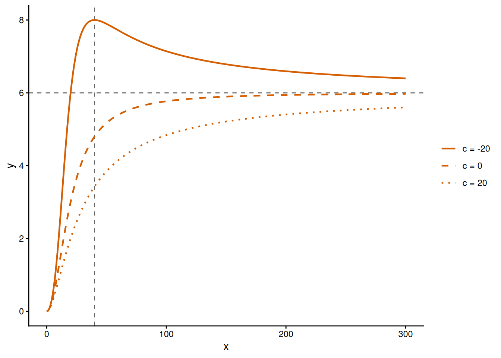
Holling type IV functions with a = 6 and b = 400, for c = −20 (solid line), c = 0 (dashed line; a Holling type III function with a half-maximum of 20) and c = 20 (dotted line). Dashed grey lines mark the asymptote and the location of the maximum of the solid curve, −2b/c = 40.
ImportantPractice: the condition on c
A Holling type IV function has \(a=5\) and \(b=9\). For \(c=-3\), find the location and the value of its maximum. Then explain what happens to the function when \(c=-6\).
TipSolution
For \(c=-3\) the condition \(c^2<4b\) holds (\(9<36\)). The maximum is at \(x_{\max}=-2b/c=-18/(-3)=6\), with value \(4ab/(4b-c^2)=180/(36-9)\approx6.67\), a third above the asymptote \(a=5\). For \(c=-6\) we have \(c^2=4b=36\), and the denominator is \(9-6x+x^2=(x-3)^2\), which is zero at \(x=3\). The function grows without bound as \(x\) approaches 3, so it cannot describe a response there. This is why the function requires \(c^2<4b\) when \(c\) is negative.
5 Exponential functions
The functions of this group are built from the exponential function \(e^{-bx}\), in which the parameter \(b\) is a rate with the inverse units of \(x\). They approach their limits faster than the rational functions of the same shape, because an exponential dominates any power of \(x\).
5.1 Exponential
\[
\begin{aligned}
\text{R}: &\quad \texttt{a * exp(-b * x)} \\
\text{Shape}: &\quad \text{decreasing, convex (decay)};\quad \text{increasing, convex (growth, } ae^{bx}\text{)} \\
\text{Domain}: &\quad x \geq 0 \\
\text{Range}: &\quad 0 < y \leq a \\
\text{Parameters}: &\quad a = \text{value at } x = 0 \text{ (units of } y\text{)};\quad
b = \text{rate (inverse units of } x\text{)} \\
\text{At zero}: &\quad f(0) = a,\ \text{slope } -ab \\
\text{At infinity}: &\quad f(x) \to 0,\ \text{slope} \to 0 \\
\text{Special}: &\quad \text{halves every } \log 2/b;\ \text{falls by a factor } e \text{ every } 1/b \\
\text{Also written}: &\quad a\,e^{-x/c} \text{ with } c = 1/b;\quad e^{d - bx} \text{ with } d = \log a
\end{aligned}
\]
The exponential function describes a quantity that changes by a constant proportion for every unit of the predictor. It is mechanistic whenever the rate of change of a quantity is proportional to the quantity itself: a cohort in which every individual has the same risk of dying per unit of time, litter that loses a constant fraction of its mass per day, or light that loses a constant fraction of its intensity in every layer of leaves of a canopy (Monsi and Saeki 1953). With a positive exponent, \(ae^{bx}\), it describes the growth of a population in which every individual reproduces at a constant rate.
The function is
\[
f(x)=ae^{-bx},
\]
where \(a\) is the value at \(x=0\), since \(e^{0}=1\), and \(b\) is the rate of decline. As \(x\to\infty\), \(e^{-bx}=1/e^{bx}\to0\), so \(f(x)\to0\). The rule for a constant multiple and the rule for the exponential give \(f'(x)=-ab\,e^{-bx}=-b\,f(x)\): the slope is negative for every \(x\), and at any point it is proportional to the value of the function. The second derivative, \(f''(x)=ab^2e^{-bx}\), is positive, so the function is convex.
The function has no special point, and what characterises it is a scale. An increase of \(x\) by one unit multiplies the function by \(e^{-b}\), wherever we start, so a fraction \(1-e^{-b}\) is lost per unit of \(x\). To find the distance over which the function falls to a fraction \(p\) of its value we solve \(e^{-bx}=p\):
\[
x_p=\frac{\log(1/p)}{b}.
\]
For \(p=1/2\) this is the half-life \(\log 2/b\approx0.69/b\), for \(p=1/e\) it is the characteristic scale \(1/b\), and for \(p=0.05\) it is \(\log(20)/b\approx3/b\). For exponential growth the same algebra gives the doubling time, \(\log 2/b\).
Taking logarithms gives \(\log f(x)=\log a-bx\): on a plot with a logarithmic \(y\) axis the exponential function is a straight line with slope \(-b\). In the other direction, the exponential of a straight line, \(e^{d-bx}\), is an exponential function with \(a=e^{d}\). This is the form used when the function is the mean of a count, since it is positive for any value of \(d\) and \(b\).
5.1.1 Example: light in a canopy
Suppose that the light above a crop is 1500 µmol/m²/s and that it decreases with the leaf area above the point of measurement, \(x\) (m² of leaves per m² of ground, counted from the top of the canopy), as \(f(x)=1500e^{-0.6x}\). The parameter \(a=1500\) µmol/m²/s is the light above the canopy and \(b=0.6\) per unit of leaf area is the rate of decline. Below two and below four units of leaf area the light is
µmol/m²/s. Every unit of leaf area intercepts a fraction \(1-e^{-0.6}\approx0.45\) of the light that reaches it. The light is halved every \(\log 2/0.6\approx1.16\) units of leaf area, and the canopy intercepts 95% of the light when \(x=\log(20)/0.6\approx5.0\). We can verify our math with R:
# Exponential decay: value a at x = 0 and rate of decline bexponential_decay =function(x, a =1, b =1) { a *exp(-b * x)}# Light below 2 and 4 units of leaf areaexponential_decay(x =c(2, 4), a =1500, b =0.6)
[1] 451.7913 136.0769
# Fraction intercepted per unit of leaf area1-exp(-0.6)
[1] 0.4511884
# Leaf area over which the light is halved, and leaf area that intercepts 95%log(2) /0.6
[1] 1.155245
log(20) /0.6
[1] 4.992887
exponential_decay(x =log(20) /0.6, a =1500, b =0.6) /1500
[1] 0.05
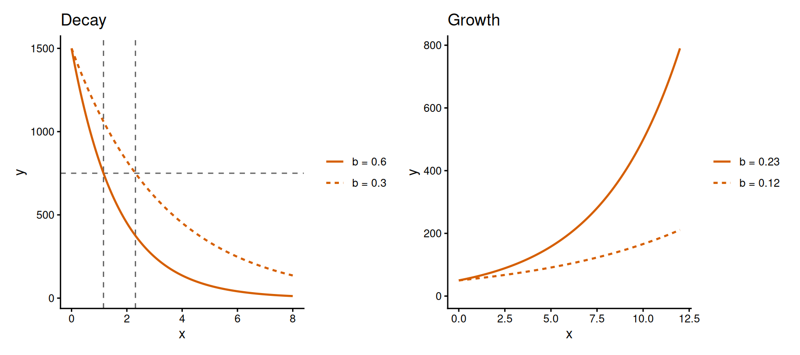
Exponential functions. Left: exponential decay with a = 1500 for b = 0.6 (solid line) and b = 0.3 (dashed line); dashed grey lines mark half of the initial value and the two half-lives, log(2)/b. Right: exponential growth, a exp(bx), with a = 50 for b = 0.23 (solid line) and b = 0.12 (dashed line).
ImportantPractice: duckweed on a pond
The number of duckweed fronds on a pond grows exponentially, \(ae^{bx}\), where \(x\) is the time in days. There are 50 fronds at the start and their number doubles every 3 days. Find \(b\), with its units. By which factor does the number of fronds grow per day, and how many fronds are there after 10 days?
TipSolution
The doubling time is \(\log 2/b=3\) days, so \(b=\log 2/3\approx0.231\)/day. Every day the number of fronds is multiplied by \(e^{b}=2^{1/3}\approx1.26\), an increase of 26% per day. After 10 days there are \(50e^{0.231\times10}=50\times2^{10/3}\approx504\) fronds, which is a little more than three doublings (\(50\times2^3=400\)).
5.2 Saturating exponential
\[
\begin{aligned}
\text{R}: &\quad \texttt{a * (1 - exp(-b * x))} \\
\text{Shape}: &\quad \text{saturating} \\
\text{Domain}: &\quad x \geq 0 \\
\text{Range}: &\quad 0 \leq y < a \\
\text{Parameters}: &\quad a = \text{asymptote (units of } y\text{)};\quad
b = \text{rate (inverse units of } x\text{)} \\
\text{At zero}: &\quad f(0) = 0,\ \text{slope } ab \\
\text{At infinity}: &\quad f(x) \to a,\ \text{slope} \to 0 \\
\text{Special}: &\quad \text{half-maximum at } x = \log 2/b;\ \text{a fraction } 1 - 1/e \text{ of the asymptote at } x = 1/b \\
\text{Also written}: &\quad d + a\left(1 - e^{-bx}\right),\ \text{which starts at } d \text{ and approaches } d + a
\end{aligned}
\]
The saturating exponential function describes a response that approaches an upper limit, at a rate that is proportional to the distance that remains to that limit. This is its mechanism, and it appears under several names. It is also called the monomolecular function. In epidemiology it is the catalytic curve, the fraction of a cohort that has been infected by a given age when the risk of infection per unit of time is constant (Anderson and May 1991). It is the simplest form of the von Bertalanffy growth curve (Essington et al. 2001), and it was used by Skellam (1951) for the number of offspring as a function of the number of adults (see also Brännström and Sumpter 2005). In this book it is the response function of the practical of Chapter 6 and of Chapter 7.
The function is
\[
f(x)=a\left(1-e^{-bx}\right),
\]
where \(a\) is the asymptote and \(b\) is the rate at which the function approaches it. At \(x=0\) the exponential equals 1 and \(f(0)=0\); as \(x\to\infty\) the exponential tends to zero and \(f(x)\to a\). The derivatives are
so the function increases, with an initial slope \(ab\), and is concave everywhere. Note that \(f'(x)=b\left(a-f(x)\right)\): the slope is proportional to the distance to the asymptote. To find where the function reaches a fraction \(p\) of its asymptote we solve \(1-e^{-bx}=p\):
\[
x_p=\frac{\log\left(1/(1-p)\right)}{b}.
\]
The half-maximum is \(x_{1/2}=\log 2/b\). At the characteristic scale \(x=1/b\) the function has reached \(1-1/e\approx63\%\) of its asymptote, and it reaches 90% at \(\log(10)/b\approx2.3/b\). A Michaelis–Menten function with the same asymptote and the same initial slope has its half-maximum at \(1/b\) and reaches 90% only at \(9/b\), so the saturating exponential bends more sharply towards its asymptote.
Two shifted and scaled forms of this function are used in later chapters (see Shifting and scaling). The first one adds a value at zero,
\[
f(x)=d+a\left(1-e^{-bx}\right),
\]
which starts at \(d\) and approaches \(d+a\); Chapters 6 and 7 write it as \(r+a\left(1-e^{-kx}\right)\) for the response of photosynthesis to light. The second one takes the value at zero, \(y_0\), and the asymptote, \(y_\infty\), as parameters,
and it is the same function with \(d=y_0\) and \(a=y_\infty-y_0\); the practical of Chapter 7 writes it as \(A-(A-R_0)e^{-kt}\) for the growth of trees.
5.2.1 Example: infection and age
Suppose that the animals of a population are exposed to a parasite at a constant rate of 0.4 infections per animal per year from birth, and that an infected animal remains recognisable as such. The fraction of animals of age \(x\) (years) that has been infected is then \(f(x)=1-e^{-0.4x}\), a saturating exponential with \(a=1\) (a fraction, without units) and \(b=0.4\)/year. At an age of 1 and of 5 years:
Half of the animals have been infected at an age of \(\log 2/0.4\approx1.7\) years and 90% at \(\log(10)/0.4\approx5.8\) years. The initial slope is \(ab=0.4\)/year, the rate of infection itself.
For the shifted form, suppose that the net photosynthesis of a leaf (µmol/m²/s) as a function of light \(x\) (µmol/m²/s) is \(f(x)=-1.5+16.5\left(1-e^{-0.004x}\right)\). It starts at \(d=-1.5\) in the dark and approaches \(d+a=15\). At \(x=500\) it is \(-1.5+16.5\left(1-e^{-2}\right)\approx12.8\), and it is zero at the light intensity that solves \(16.5\left(1-e^{-0.004x}\right)=1.5\), that is, at \(x=\log\left(1/(1-1.5/16.5)\right)/0.004\approx23.8\) µmol/m²/s. We can verify our math with R:
# Saturating exponential: asymptote a and rate bsaturating_exponential =function(x, a =1, b =1) { a * (1-exp(-b * x))}# Fraction infected at 1 and 5 yearssaturating_exponential(x =c(1, 5), a =1, b =0.4)
[1] 0.3296800 0.8646647
# Ages at which 50% and 90% of the animals have been infectedlog(2) /0.4
[1] 1.732868
log(10) /0.4
[1] 5.756463
# Shifted form for photosynthesis: value in the dark, at x = 500 and where it is# zero (up to rounding error)light_values =c(0, 500, log(1/ (1-1.5/16.5)) /0.004)light_values
[1] 0.00000 500.00000 23.82754
-1.5+saturating_exponential(x = light_values, a =16.5, b =0.004)
[1] -1.500000e+00 1.276697e+01 4.440892e-16
# The same function written with the value at zero and the asymptote15- (15--1.5) *exp(-0.004* light_values)
[1] -1.50000 12.76697 0.00000
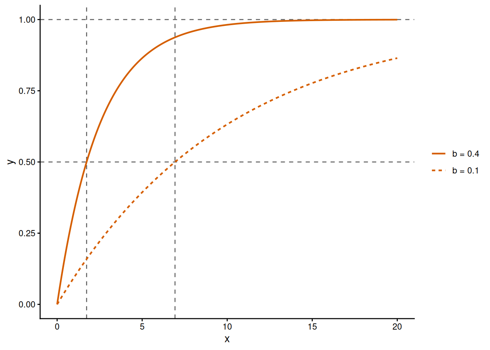
Saturating exponential functions with an asymptote a = 1 (dashed grey line) and a rate b = 0.4 (solid line) and b = 0.1 (dashed line). Vertical dashed lines mark the two half-maxima, log(2)/b.
ImportantPractice: emergence of seedlings
The cumulative number of seedlings that have emerged in a plot approaches 120 seedlings/m², and 60 seedlings/m² have emerged after 7 days. Find the rate \(b\) of a saturating exponential function with these properties. After how many days have 90% of the seedlings emerged? What is the rate of emergence at the start?
TipSolution
Half of the asymptote is reached after 7 days, so \(\log 2/b=7\) and \(b=\log 2/7\approx0.099\)/day. The function reaches 90% of its asymptote at \(\log(10)/b\approx23.3\) days. The initial slope is \(ab=120\times0.099\approx11.9\) seedlings/m²/day.
5.3 Ricker
\[
\begin{aligned}
\text{R}: &\quad \texttt{a * x * exp(-b * x)} \\
\text{Shape}: &\quad \text{unimodal} \\
\text{Domain}: &\quad x \geq 0 \\
\text{Range}: &\quad 0 \leq y \leq a/(be) \\
\text{Parameters}: &\quad a = \text{initial slope (units of } y \text{ per unit of } x\text{)};\quad
b = \text{rate (inverse units of } x\text{)} \\
\text{At zero}: &\quad f(0) = 0,\ \text{slope } a \\
\text{At infinity}: &\quad f(x) \to 0,\ \text{slope} \to 0 \\
\text{Special}: &\quad \text{maximum at } x = 1/b \text{ with value } a/(be);\ \text{inflection point at } x = 2/b \\
\text{Also written}: &\quad a\,x\,e^{-x/c} \text{ with } c = 1/b;\quad x\,e^{r(1 - x/K)} \text{ with } a = e^{r},\ b = r/K
\end{aligned}
\]
The Ricker function describes a response that increases in proportion to the predictor when the predictor is small, reaches a maximum and declines towards zero. Ricker (1954) proposed it for the number of recruits of a fish stock as a function of the number of spawners. Its mechanism is a production per individual that declines exponentially with density, \(ae^{-bx}\), so that the total production of \(x\) individuals is \(axe^{-bx}\). In fisheries the decline is attributed to competition among the young fish, for example through cannibalism (Quinn and Deriso 1999), and the same form describes populations in which fecundity falls with density (Hassell 1975; Royama 1992; Brännström and Sumpter 2005). The function is also used phenomenologically for any response that starts at zero, peaks and falls. It is one of the two functions of Chapter 5, where its properties are derived.
The function is
\[
f(x)=axe^{-bx},
\]
where \(a\) is the initial slope and \(b\) is the rate at which the production per individual declines. Chapter 5 shows that
which gives a maximum at \(x_{\max}=1/b\), with value \(a/(be)\), and an inflection point at \(x=2/b\), where the value is \(2a/(be^2)\) and the decline is steepest. At the maximum the production per individual is \(ae^{-1}\), that is, 37% of what it is at low density.
In population ecology the function is written with a growth rate \(r\) and a carrying capacity \(K\),
\[
f(x)=x\,e^{r(1-x/K)},
\]
which is the form above with \(a=e^{r}\) and \(b=r/K\). In this form \(f(K)=K\): at the carrying capacity the output equals the input. With the location of the peak as a parameter the function is \(axe^{-x/c}\), and the generalised Ricker function takes both the location and the height of the peak as parameters.
5.3.1 Example: seed production of an annual grass
Suppose that the number of seeds produced per m² by an annual grass, as a function of the density of plants \(x\) (plants/m²), is \(f(x)=120xe^{-0.004x}\). The parameter \(a=120\) seeds per plant is the seed production of a plant without neighbours and \(b=0.004\) m² per plant is the rate at which the production per plant declines with density. The seed production per m² is highest at
where each plant produces \(120e^{-1}\approx44\) seeds. The inflection point is at \(2/0.004=500\) plants/m², where the function gives \(2\times120/(0.004e^2)\approx8120\) seeds/m². We can verify our math with R:
# Ricker function: initial slope a and rate bricker =function(x, a =1, b =1) { a * x *exp(-b * x)}# Location and height of the maximum on a fine grid of densitiesdensity_grid =seq(0, 2000, by =0.01)seed_values =ricker(density_grid, a =120, b =0.004)density_grid[which.max(seed_values)]
[1] 250
max(seed_values)
[1] 11036.38
# The values derived on paper: 1 / b and a / (b * e)1/0.004
[1] 250
120/ (0.004*exp(1))
[1] 11036.38
# Value at the inflection point and second derivative therericker(x =500, a =120, b =0.004)
[1] 8120.117
ricker_second =D(D(expression(a * x *exp(-b * x)), "x"), "x")eval(ricker_second, list(a =120, b =0.004, x =500))
[1] 0
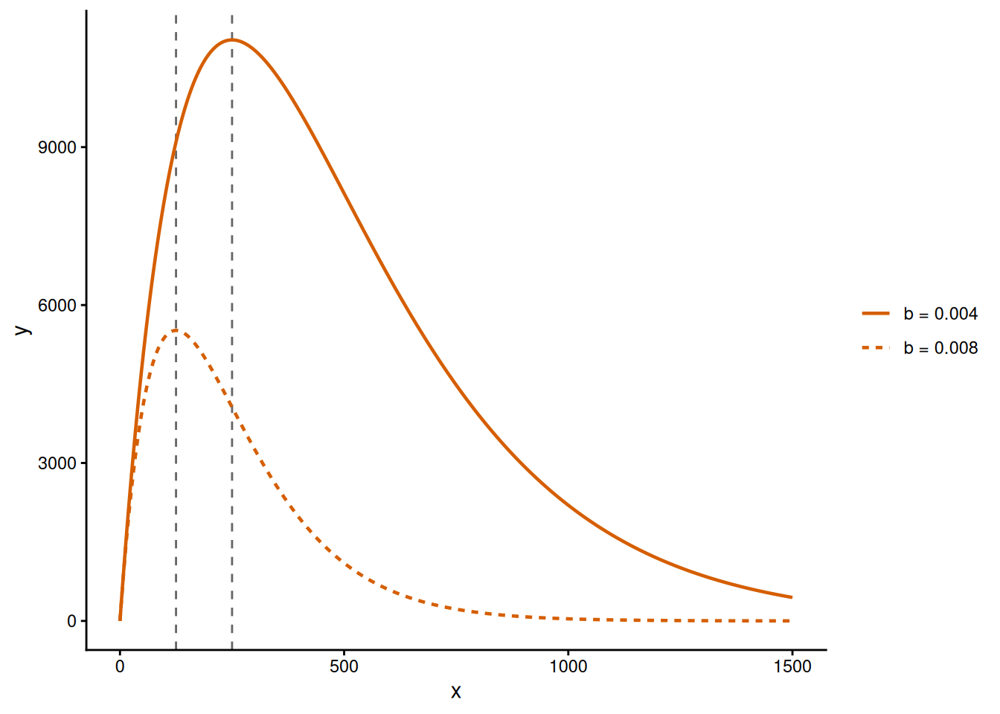
Ricker functions with an initial slope a = 120 and a rate b = 0.004 (solid line) and b = 0.008 (dashed line). Vertical dashed lines mark the locations of the two maxima, 1/b.
ImportantPractice: a Ricker function in its population form
A paper describes the number of voles in a meadow in one year as a function of their number \(x\) in the previous year with \(f(x)=xe^{r(1-x/K)}\), where \(r=1.5\) and \(K=800\) voles. Write the function as \(axe^{-bx}\). At which number of voles is the function highest, and which value does it have there?
TipSolution
Since \(e^{r(1-x/K)}=e^{r}e^{-(r/K)x}\), we have \(a=e^{1.5}\approx4.48\) voles per vole and \(b=r/K=1.5/800=0.001875\) per vole. The maximum is at \(x_{\max}=1/b=K/r\approx533\) voles, where the function equals \(a/(be)=(K/r)\,e^{r-1}=533\times e^{0.5}\approx879\) voles.
5.4 Logistic
\[
\begin{aligned}
\text{R}: &\quad \texttt{a / (1 + exp(-b * (x - c)))} \\
\text{Shape}: &\quad \text{sigmoid, symmetric around its midpoint} \\
\text{Domain}: &\quad \text{all } x \\
\text{Range}: &\quad 0 < y < a \\
\text{Parameters}: &\quad a = \text{upper asymptote (units of } y\text{)};\quad
b = \text{steepness (inverse units of } x\text{)};\quad c = \text{midpoint (units of } x\text{)} \\
\text{At zero}: &\quad f(0) = a/(1 + e^{bc}) \\
\text{At infinity}: &\quad f(x) \to a \text{ as } x \to \infty;\quad f(x) \to 0 \text{ as } x \to -\infty \\
\text{Special}: &\quad \text{inflection point at } x = c,\ \text{with value } a/2 \text{ and slope } ab/4 \\
\text{Also written}: &\quad \dfrac{e^{\beta_0 + \beta_1 x}}{1 + e^{\beta_0 + \beta_1 x}} \text{ with } a = 1,\ b = \beta_1,\ c = -\beta_0/\beta_1;\quad
\dfrac{K}{1 + \frac{K - n_0}{n_0}e^{-rx}}
\end{aligned}
\]
The logistic function describes a response that increases from a lower to an upper limit, slowly at first, fastest half-way and slowly again. In population ecology it is the size of a population whose growth rate per individual declines linearly with its density, which is its mechanism (see Adler 2004). With an upper asymptote of 1 it is the usual function for a probability that changes with a predictor, and in that role it is phenomenological: it is chosen because it stays between 0 and 1. Verhulst (1838) proposed the curve as a model for the growth of a population and later gave it its name (courbe logistique).
The function is
\[
f(x)=\frac{a}{1+e^{-b(x-c)}},
\]
where \(a\) is the upper asymptote, \(b\) is the steepness and \(c\) is the midpoint. The function is defined for negative values of \(x\) as well, so it has two ends. As \(x\to\infty\), \(e^{-b(x-c)}\to0\) and \(f(x)\to a\). As \(x\to-\infty\) the exponential grows without bound and \(f(x)\to0\). So the function has two asymptotes, 0 and \(a\). At \(x=0\) its value is \(a/(1+e^{bc})\), which is small when \(bc\) is large but is never zero.
For the derivative we write \(f(x)=a\,u^{-1}\) with \(u=1+e^{-b(x-c)}\) and apply the chain rule:
where the last equality follows from \(f(x)/a=1/u\) and \(1-f(x)/a=e^{-b(x-c)}/u\). It writes the slope in terms of the function itself, which is convenient: the slope is close to zero where \(f(x)\) is close to 0 or to \(a\), and it is largest in between. If we differentiate \(f'(x)=bf(x)-(b/a)f(x)^2\) once more with the chain rule, we obtain
Since \(f'(x)\) is positive everywhere, the second derivative is zero only where \(f(x)=a/2\), which happens at \(x=c\) (there the exponential equals \(e^{0}=1\)). The function is convex before that point and concave after it. So the midpoint \(c\) is the inflection point of the function: the value of \(x\) at which the function reaches half of its asymptote and at which it is steepest. The slope at the midpoint is \(f'(c)=b\,(a/2)(1-1/2)=ab/4\), so for a given asymptote the parameter \(b\) sets the maximum slope. The function is symmetric around its midpoint: \(f(c+s)+f(c-s)=a\) for any distance \(s\).
To find where the function reaches a fraction \(p\) of its asymptote we solve \(f(x_p)=pa\), which gives \(e^{-b(x_p-c)}=(1-p)/p\) and
So the function reaches 90% of its asymptote at \(c+\log(9)/b\approx c+2.2/b\) and 10% at \(c-2.2/b\). The distance between these two points, \(4.4/b\), is a convenient way of reading \(b\) from a plot.
The logistic function has three forms that are in common use (see Reparameterisation). The one of this entry has the upper asymptote, the steepness and the midpoint as parameters. Statistical texts write the function with an asymptote of 1 as the inverse logit of a straight line,
where \(\beta_0\) is the intercept and \(\beta_1\) the slope of the line. Comparing the exponents, \(\beta_1=b\) and \(\beta_0=-bc\), so the midpoint is \(c=-\beta_0/\beta_1\). In R this form is plogis(beta_0 + beta_1 * x). In population ecology, with time as the input, the function is written as
where \(K\) is the carrying capacity, \(n_0\) is the size of the population at \(x=0\) and \(r\) is its growth rate per individual at low density. In this form the function is the solution of a differential equation for the growth of a population, \(dn/dt=rn(1-n/K)\), which is where the parameters \(r\) and \(K\) come from (this book does not work with dynamical models, so we use the function only as a curve). It is the form of this entry with \(a=K\), \(b=r\) and \(c=\log\left((K-n_0)/n_0\right)/r\). Some texts write the function with the hyperbolic tangent, \(\tfrac{a}{2}\left[1+\tanh\left(b(x-c)/2\right)\right]\), which is again the same curve. A lower asymptote other than zero is obtained by adding a parameter, \(d+a/(1+e^{-b(x-c)})\), as in the threshold entry.
5.4.1 Example: maturity and body length
Suppose that the probability that a female fish is mature, as a function of her body length \(x\) (cm), is a logistic function with \(a=1\), \(b=0.25\)/cm and \(c=60\) cm. Half of the females of 60 cm are mature, and around that length the probability increases by \(ab/4=0.0625\)/cm. At 50 cm the probability is
and 90% of the females are mature at a length of \(60+\log(9)/0.25\approx68.8\) cm. In the statistical form the function is \(\operatorname{logit}^{-1}(-15+0.25x)\), since \(\beta_0=-bc=-15\). We can verify our math with R:
# Logistic function: upper asymptote a, steepness b and midpoint clogistic =function(x, a =1, b =1, c =0) { a / (1+exp(-b * (x - c)))}# Probability of being mature at 50 and 60 cmlogistic(x =c(50, 60), a =1, b =0.25, c =60)
[1] 0.07585818 0.50000000
# The same with plogis() and with the hyperbolic tangentplogis(-15+0.25*c(50, 60))
[1] 0.07585818 0.50000000
0.5* (1+tanh(0.25* (c(50, 60) -60) /2))
[1] 0.07585818 0.50000000
# Length at which 90% of the females are maturelength_90 =60+log(9) /0.25length_90
[1] 68.7889
logistic(x = length_90, a =1, b =0.25, c =60)
[1] 0.9
# Slope at the midpoint: D() and the formula a * b / 4logistic_derivative =D(expression(a / (1+exp(-b * (x - c)))), "x")eval(logistic_derivative, list(a =1, b =0.25, c =60, x =60))
[1] 0.0625
1*0.25/4
[1] 0.0625
The population form can be checked in the same way, for a population that starts at 1 and approaches a carrying capacity of 10 with a growth rate of 0.8 per unit of time:
# Population form with carrying capacity K = 10, initial size n0 = 1 and rate r = 0.8x_values =seq(0, 10, by =2)10/ (1+ ((10-1) /1) *exp(-0.8* x_values))
Logistic functions with an upper asymptote a = 1 and a midpoint c = 60, for a steepness b = 0.25 (solid line) and b = 0.1 (dashed line). Dashed grey lines mark the midpoint and half of the asymptote.
ImportantPractice: height growth of a tree
The height of a tree approaches 30 m. The tree is 15 m tall at an age of 25 years, which is also when it grows fastest, at 0.9 m/year. Find the parameters \(a\), \(b\) and \(c\) of a logistic function with these properties, with their units. At which age is the tree 27 m tall?
TipSolution
The asymptote is \(a=30\) m. Half of it is reached at the midpoint, so \(c=25\) years, which is also where the slope is largest. That slope is \(ab/4=0.9\) m/year, so \(b=4\times0.9/30=0.12\)/year. A height of 27 m is 90% of the asymptote, which the function reaches at \(c+\log(9)/b=25+2.197/0.12\approx43.3\) years.
5.5 Gompertz
\[
\begin{aligned}
\text{R}: &\quad \texttt{a * exp(-exp(-b * (x - c)))} \\
\text{Shape}: &\quad \text{sigmoid, asymmetric} \\
\text{Domain}: &\quad \text{all } x \\
\text{Range}: &\quad 0 < y < a \\
\text{Parameters}: &\quad a = \text{upper asymptote (units of } y\text{)};\quad
b = \text{rate (inverse units of } x\text{)};\quad c = \text{inflection point (units of } x\text{)} \\
\text{At zero}: &\quad f(0) = a\exp\left(-e^{bc}\right) \\
\text{At infinity}: &\quad f(x) \to a \text{ as } x \to \infty;\quad f(x) \to 0 \text{ as } x \to -\infty \\
\text{Special}: &\quad \text{inflection point at } x = c,\ \text{with value } a/e \text{ and slope } ab/e \\
\text{Also written}: &\quad a\exp\left(-d\,e^{-bx}\right) \text{ with } d = e^{bc}
\end{aligned}
\]
The Gompertz function2 is a sigmoid function like the logistic, with the difference that it is asymmetric: it leaves its lower limit quickly and approaches its upper limit slowly. It is used as an alternative to the logistic function for the growth of organisms and of populations. It can be derived from the assumption that the relative growth rate, \(f'(x)/f(x)\), declines exponentially with \(x\), as we show below. The practical of Chapter 6 compares it with the logistic function.
The function is
\[
f(x)=a\exp\left(-e^{-b(x-c)}\right),
\]
where \(a\) is the upper asymptote, \(b\) is a rate and \(c\) is the location of the inflection point. To analyse it we write \(u=e^{-b(x-c)}\), so that \(f(x)=ae^{-u}\). As \(x\to\infty\), \(u\to0\) and \(f(x)\to a\); as \(x\to-\infty\), \(u\) grows without bound and \(f(x)\to0\). The chain rule, with \(du/dx=-bu\), gives
where the last step uses \(u=-\log\left(f(x)/a\right)\). The relative growth rate is therefore \(f'(x)/f(x)=bu=b\,e^{-b(x-c)}\), an exponential decay. Differentiating once more with the product rule:
Since \(f'(x)\) is positive, the second derivative is zero only where \(\log(a/f(x))=1\), that is, where \(f(x)=a/e\). This happens when \(u=1\), at \(x=c\). So the inflection point is at \(x=c\), where the function has reached \(1/e\approx37\%\) of its asymptote (against 50% for the logistic function) and its slope is \(ab/e\). Half of the asymptote is reached later, where \(u=\log 2\), at \(x=c-\log(\log 2)/b\approx c+0.37/b\).
The function is also written as \(a\exp\left(-d\,e^{-bx}\right)\), with \(d=e^{bc}\). In that form the value at zero is \(ae^{-d}\) and the inflection point is at \(x=\log d/b\).
5.5.1 Example: growth of a chick
Suppose that the body mass of a tern chick (g) as a function of its age \(x\) (days) follows a Gompertz function with \(a=110\) g, \(b=0.15\)/day and \(c=5\) days. At hatching the chick weighs
It grows fastest at an age of 5 days, when it weighs \(110/e\approx40.5\) g and gains \(ab/e=110\times0.15/e\approx6.1\) g/day. It reaches half of its final mass at \(5-\log(\log 2)/0.15\approx7.4\) days, and at 20 days it weighs \(110\exp\left(-e^{-2.25}\right)\approx99\) g. We can verify our math with R:
# Gompertz function: upper asymptote a, rate b and inflection point cgompertz =function(x, a =1, b =1, c =0) { a *exp(-exp(-b * (x - c)))}# Body mass (g) at hatching, at 5 days and at 20 daysgompertz(x =c(0, 5, 20), a =110, b =0.15, c =5)
[1] 13.24315 40.46674 98.99617
# Slope at the inflection point: D() and the formula a * b / egompertz_derivative =D(expression(a *exp(-exp(-b * (x - c)))), "x")eval(gompertz_derivative, list(a =110, b =0.15, c =5, x =5))
[1] 6.070011
110*0.15/exp(1)
[1] 6.070011
# The second derivative is zero at the inflection pointgompertz_second =D(gompertz_derivative, "x")eval(gompertz_second, list(a =110, b =0.15, c =5, x =5))
[1] 0
# Age at which the chick reaches half of its final massage_half =5-log(log(2)) /0.15age_half
[1] 7.443419
gompertz(x = age_half, a =110, b =0.15, c =5)
[1] 55
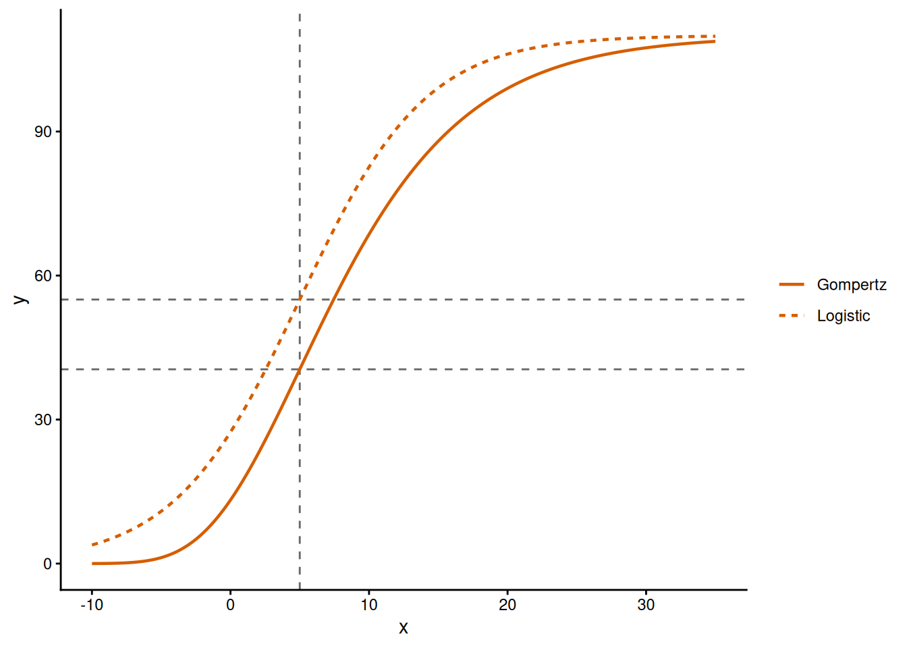
Gompertz function with a = 110, b = 0.15 and c = 5 (solid line) and the logistic function with the same asymptote, the same inflection point and the same maximum slope (dashed line; b = 0.22). Dashed grey lines mark the inflection point and the values a/e and a/2 that the two functions have there.
ImportantPractice: height of a sapling
The height of a sapling (cm) as a function of its age \(x\) (years) is given as \(80\exp\left(-4e^{-0.5x}\right)\). What is its height at \(x=0\)? At which age does it grow fastest, how tall is it then and how fast does it grow?
TipSolution
This is the second form of the function, with \(a=80\) cm, \(d=4\) and \(b=0.5\)/year. At \(x=0\) the height is \(80e^{-4}\approx1.5\) cm. The sapling grows fastest at the inflection point, \(c=\log d/b=\log 4/0.5\approx2.8\) years, when its height is \(a/e\approx29.4\) cm and its growth rate is \(ab/e=80\times0.5/e\approx14.7\) cm/year.
5.6 Bell-shaped
\[
\begin{aligned}
\text{R}: &\quad \verb|a * exp(-(x - c)^2 / (2 * b^2))| \\
\text{Shape}: &\quad \text{unimodal, symmetric} \\
\text{Domain}: &\quad \text{all } x \\
\text{Range}: &\quad 0 < y \leq a \\
\text{Parameters}: &\quad a = \text{height of the peak (units of } y\text{)};\quad
b = \text{width (units of } x\text{)};\quad c = \text{location of the peak (units of } x\text{)} \\
\text{At infinity}: &\quad f(x) \to 0 \text{ as } x \to \infty \text{ and as } x \to -\infty \\
\text{Special}: &\quad \text{maximum at } x = c \text{ with value } a;\ \text{inflection points at } x = c \pm b \\
\text{Also written}: &\quad e^{\beta_0 + \beta_1 x + \beta_2 x^2} \text{ with } \beta_2 < 0
\end{aligned}
\]
The bell-shaped function, or Gaussian curve, describes a response that is highest at one value of the predictor and declines symmetrically on both sides of it. It is used for the abundance or the performance of a species along an environmental gradient, with the location of the peak as the optimum of the species and the width as its tolerance. It is a phenomenological function. Its formula is that of the probability density of the Normal distribution, multiplied by a constant so that the height of the peak is a parameter; here it describes a curve and the area under it has no role.
The function is
\[
f(x)=a\,e^{-(x-c)^2/(2b^2)},
\]
where \(a\) is the height of the peak, \(c\) its location and \(b\) its width. The parameter \(c\) can take any value. The exponent is zero at \(x=c\), where \(f(c)=a\), and it becomes more and more negative on both sides, so \(f(x)\to0\) as \(x\to\infty\) and as \(x\to-\infty\). The chain rule gives
The slope is positive for \(x<c\), zero at \(x=c\) and negative for \(x>c\), so the maximum is at \(c\). The second derivative is zero where \((x-c)^2=b^2\): the inflection points are at \(x=c\pm b\), where the function equals \(a\,e^{-1/2}\approx0.61a\). The function is concave between them and convex outside. If we solve \(f(x)=a/2\) we find that the function is at half of its height at \(x=c\pm b\sqrt{2\log 2}\approx c\pm1.18b\).
The logarithm of the function is a parabola, so the function is the exponential of a quadratic function, \(e^{\beta_0+\beta_1x+\beta_2x^2}\) with \(\beta_2<0\) (a composition). Comparing the two forms gives
For a probability, which cannot exceed 1, the corresponding function is the inverse logit of a quadratic function, \(\operatorname{logit}^{-1}\left[d-b(x-c)^2\right]\), which is presented in Chapter 5 and used in the practical of Chapter 6.
5.6.1 Example: a diatom along a gradient of pH
Suppose that the abundance of a diatom (cells/mL) in lakes of different pH, \(x\), follows a bell-shaped function with \(a=200\) cells/mL, \(c=6.5\) and \(b=0.8\) units of pH. The abundance is highest, 200 cells/mL, at a pH of 6.5. At the inflection point \(c+b=7.3\) and at a pH of 5 it is
cells/mL. The abundance is at least half of its maximum within \(0.8\sqrt{2\log 2}\approx0.94\) units of pH from the optimum, that is, between a pH of 5.56 and 7.44. We can verify our math with R:
# Bell-shaped function: height a, width b and location c of the peakbell_shaped =function(x, a =1, b =1, c =0) { a *exp(-(x - c)^2/ (2* b^2))}# Abundance (cells/mL) at a pH of 6.5, 7.3 and 5bell_shaped(x =c(6.5, 7.3, 5), a =200, b =0.8, c =6.5)
[1] 200.00000 121.30613 34.48432
# Values of pH at which the abundance is half of its maximumhalf_height =6.5+c(-1, 1) *0.8*sqrt(2*log(2))half_height
[1] 5.558072 7.441928
bell_shaped(x = half_height, a =200, b =0.8, c =6.5)
[1] 100 100
# The second derivative is zero (up to rounding error) at the inflection points# c - b and c + bbell_expression =expression(a *exp(-(x - c)^2/ (2* b^2)))bell_second =D(D(bell_expression, "x"), "x")eval(bell_second, list(a =200, b =0.8, c =6.5, x =c(5.7, 7.3)))
[1] -1.110223e-13 -1.110223e-13
# The same curve from the Normal density, rescaled to a height of a200*0.8*sqrt(2* pi) *dnorm(x =5, mean =6.5, sd =0.8)
[1] 34.48432
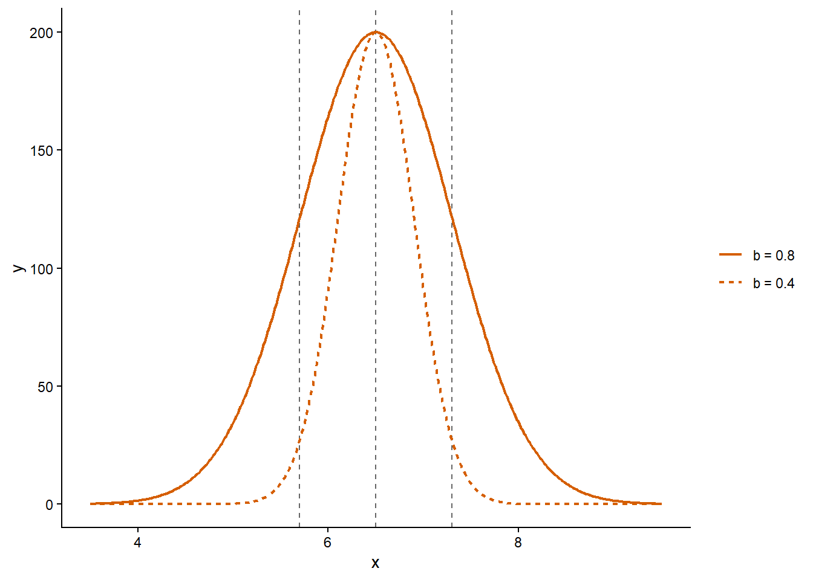
Bell-shaped functions with a peak of height a = 200 at c = 6.5, for a width b = 0.8 (solid line) and b = 0.4 (dashed line). Vertical dashed lines mark the peak and the inflection points c − b and c + b of the solid curve.
ImportantPractice: a sedge and the depth of the water table
The expected number of shoots of a sedge in a quadrat is described as \(e^{-1+2x-0.25x^2}\), where \(x\) is the depth of the water table (dm). Write this function as a bell-shaped function: at which depth is the expected number highest, how high is it there, and what is the width \(b\)?
TipSolution
Here \(\beta_0=-1\), \(\beta_1=2\) and \(\beta_2=-0.25\). The peak is at \(c=-\beta_1/(2\beta_2)=-2/(-0.5)=4\) dm. Its height is \(a=e^{\beta_0-\beta_1^2/(4\beta_2)}=e^{-1+4}=e^{3}\approx20.1\) shoots per quadrat, which is also what we obtain by evaluating the function at \(x=4\): \(e^{-1+8-4}=e^{3}\). The width is \(b=\sqrt{-1/(2\beta_2)}=\sqrt{2}\approx1.41\) dm. So the function is \(20.1\,e^{-(x-4)^2/4}\).
6 Functions with a power parameter
In the functions of this group a parameter appears as an exponent. An exponent has no units and changes the shape of a function, which makes these functions flexible. Most of them contain one of the functions of the previous groups as a special case (see Nested functions).
6.1 Power law
\[
\begin{aligned}
\text{R}: &\quad \verb|a * x^b| \\
\text{Shape}: &\quad \text{monotonic: increasing when } b > 0,\ \text{decreasing when } b < 0 \\
\text{Domain}: &\quad x > 0 \quad (x \geq 0 \text{ when } b > 0) \\
\text{Range}: &\quad y > 0 \\
\text{Parameters}: &\quad a = \text{value at } x = 1 \text{ (units of } y \text{ per unit of } x^b\text{)};\quad
b = \text{exponent (no units)} \\
\text{At zero}: &\quad f(x) \to 0 \text{ when } b > 0;\ \text{grows without bound when } b < 0 \\
\text{At infinity}: &\quad \text{grows without bound when } b > 0;\ f(x) \to 0 \text{ when } b < 0 \\
\text{Special}: &\quad \text{none: multiplying } x \text{ by a factor } m \text{ multiplies } y \text{ by } m^b \text{ everywhere} \\
\text{Also written}: &\quad \log y = \log a + b\log x;\quad y_0\,(x/x_0)^b \text{ with } y_0 = a\,x_0^b
\end{aligned}
\]
The power law describes a response that changes by a constant proportion when the predictor changes by a constant proportion. It is the function of allometry, the study of how the properties of organisms change with their size: the reproductive biomass of plants as a function of the diameter of their stem (Niklas 1993) and the metabolic rate of animals as a function of their body mass (Etienne et al. 2006) are two examples. It is also used for the number of species as a function of the area sampled (Tjørve 2003) and for the fractal properties of landscapes (Halley et al. 2004). A power law is mechanistic when it follows from geometry (the surface of an organism is proportional to the square of its length and its volume to the cube), and many other mechanisms lead to power laws (Mitzenmacher 2003), so the function alone says little about the process behind it.
The function is
\[
f(x)=ax^{b},
\]
where \(b\) is the exponent, which can be positive or negative, and \(a\) is the value of the function at \(x=1\). The two ends depend on the sign of \(b\). When \(b>0\) the function starts at zero and grows without bound; when \(b<0\) it is unbounded as \(x\to0\) and tends to zero as \(x\to\infty\). The power rule gives
The function is convex when \(b>1\) or \(b<0\), concave when \(0<b<1\) and a straight line through the origin when \(b=1\). Rearranging the first derivative gives
\[
\frac{f'(x)}{f(x)}=\frac{b}{x},
\]
which says that a small relative change in \(x\) produces a relative change in \(y\) that is \(b\) times as large: an increase of 1% in \(x\) changes \(y\) by about \(b\)%. For a change of any size, \(f(mx)=a(mx)^{b}=m^{b}f(x)\), so multiplying \(x\) by \(m\) multiplies \(y\) by \(m^{b}\), whatever the value of \(x\). It follows that the power law has no characteristic scale and no half-maximum. It has no upper asymptote either; when \(b<0\) it has a horizontal asymptote at zero, which it approaches as \(x\to\infty\). This is the main difference from the exponential function, in which it is a fixed step added to \(x\) that multiplies \(y\) by a constant factor.
Taking logarithms gives \(\log f(x)=\log a+b\log x\): on a plot with two logarithmic axes the power law is a straight line with slope \(b\). The units of \(a\) are awkward, since they depend on \(b\). They become those of \(y\) if we write the function with a reference value \(x_0\) of the predictor,
where \(y_0\) is the value of the function at \(x=x_0\).
6.1.1 Example: species and area
Suppose that the number of plant species found in a sample of grassland of area \(x\) (ha) is \(f(x)=12x^{0.25}\). The parameter \(a=12\) is the number of species in one hectare and the exponent is \(b=0.25\). In 16 ha and in 10000 ha the function gives
species. Doubling the area multiplies the number of species by \(2^{0.25}\approx1.19\), at any area, and doubling the number of species requires an area that is \(2^{1/0.25}=16\) times larger. The slope at 16 ha is \(b\,f(16)/16=0.25\times24/16=0.375\) species/ha. Written around 16 ha, the function is \(24(x/16)^{0.25}\). We can verify our math with R:
# Power law: value a at x = 1 and exponent bpower_law =function(x, a =1, b =1) { a * x^b}# Number of species in 1, 16 and 10000 hapower_law(x =c(1, 16, 10000), a =12, b =0.25)
[1] 12 24 120
# Factor by which the number of species changes when the area doublespower_law(x =c(2, 32, 20000), a =12, b =0.25) /power_law(x =c(1, 16, 10000), a =12, b =0.25)
[1] 1.189207 1.189207 1.189207
# Slope at 16 ha: D() and the formula b * f(x) / xpower_derivative =D(expression(a * x^b), "x")eval(power_derivative, list(a =12, b =0.25, x =16))
[1] 0.375
0.25*24/16
[1] 0.375
# The same function written around a reference area of 16 ha, at 100 ha24* (100/16)^0.25
[1] 37.94733
power_law(x =100, a =12, b =0.25)
[1] 37.94733
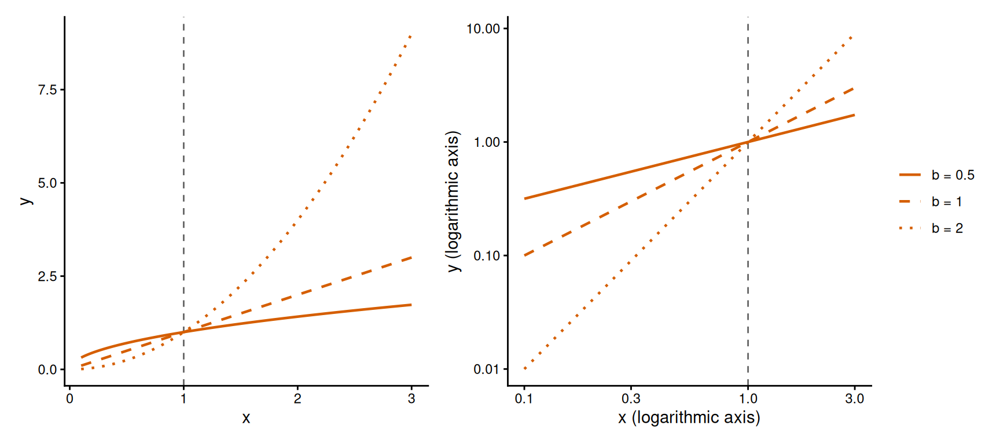
Power laws with a = 1 and an exponent b = 0.5 (solid line), b = 1 (dashed line) and b = 2 (dotted line), on the original axes (left) and on logarithmic axes (right), where each of them is a straight line with slope b. The three functions cross at x = 1, where they equal a.
ImportantPractice: leaf area and leaf length
A leaf that is 5 cm long has an area of 20 cm², and a leaf that is 10 cm long has an area of 80 cm². Find the parameters \(a\) and \(b\) of the power law through these two points. Which area does it give for a leaf of 15 cm? What does the value of \(b\) say about the shape of the leaves?
TipSolution
Doubling the length multiplies the area by \(80/20=4\), so \(2^{b}=4\) and \(b=2\). In general, \(b=\log(y_2/y_1)/\log(x_2/x_1)\), the slope of the line on logarithmic axes. From the first point, \(a=20/5^{2}=0.8\) cm²/cm², a number without units. For a leaf of 15 cm the function gives \(0.8\times15^{2}=180\) cm². An exponent of 2 means that the area is proportional to the square of the length, as it is for leaves that keep the same shape as they become larger; \(a=0.8\) is then the area of a leaf as a fraction of the square of its length.
6.2 von Bertalanffy
\[
\begin{aligned}
\text{R}: &\quad \texttt{a * (1 - exp(-b * (x - c)))} \\
\text{Shape}: &\quad \text{saturating (simple form)};\quad \text{sigmoid (generalised form)} \\
\text{Domain}: &\quad x \geq c \\
\text{Range}: &\quad 0 \leq y < a \\
\text{Parameters}: &\quad a = \text{asymptotic size (units of } y\text{)};\quad
b = \text{growth rate (inverse units of } x\text{)}; \\
&\quad c = \text{value of } x \text{ at which the size is zero (units of } x\text{)} \\
\text{At zero}: &\quad f(0) = a\left(1 - e^{bc}\right),\ \text{slope } ab\,e^{bc} \quad (c \leq 0) \\
\text{At infinity}: &\quad f(x) \to a,\ \text{slope} \to 0 \\
\text{Special}: &\quad \text{half of the asymptote at } x = c + \log 2/b \\
\text{Also written}: &\quad a - (a - y_0)\,e^{-bx} \text{ with } y_0 = a\left(1 - e^{bc}\right);\quad
a\left(1 - e^{-b(x-c)}\right)^{1/(1-d)} \text{ (generalised form)}
\end{aligned}
\]
The von Bertalanffy function describes the size of an organism as a function of its age. It is the usual growth curve in fisheries and it is a mechanistic function (von Bertalanffy 1938): it follows from a balance between the energy that an organism assimilates and the energy that it spends on maintenance (Essington et al. 2001). In its simple form, which is used for body length, it is a saturating exponential function that is shifted along \(x\). In its generalised form, which is used for body mass, the saturating exponential is raised to a power, and the function becomes sigmoid.
The simple form is
\[
f(x)=a\left(1-e^{-b(x-c)}\right),
\]
where \(a\) is the asymptotic size, \(b\) is the growth rate and \(c\) is the age at which the function is zero. An organism has a positive size at birth, so \(c\) is zero or negative when \(x\) is the age since birth: it is where the curve would start if we extended it backwards, and it is a location parameter with no biological meaning of its own. The properties are those of the saturating exponential function, moved by \(c\). The size at birth is \(f(0)=a\left(1-e^{bc}\right)\), the function tends to \(a\) as \(x\to\infty\), and its derivative,
\[
f'(x)=ab\,e^{-b(x-c)}=b\left(a-f(x)\right),
\]
is positive and decreases with age, so growth is fastest at birth and the function is concave. Half of the asymptotic size is reached at \(x=c+\log 2/b\). Since the size at birth is easier to interpret than \(c\), the function is also written as \(a-(a-y_0)\,e^{-bx}\) with \(y_0=f(0)\).
The generalised form is
\[
f(x)=a\left(1-e^{-b(x-c)}\right)^{1/(1-d)},
\]
where \(d\) is an exponent between 0 and 1, without units. It is the size of an organism that gains mass at a rate proportional to its mass raised to the power \(d\) and loses mass at a rate proportional to its mass; the rate \(b\) is then \(1-d\) times the rate of loss. With \(d=0\) the exponent \(1/(1-d)\) is 1 and we recover the simple form, so the simple form is nested in the generalised one. The value \(d=2/3\) is often used, on the argument that assimilation is proportional to a surface (a length squared) and mass to a volume (a length cubed) (Quinn and Deriso 1999). The exponent is then 3, and the function is the cube of the simple form: if length follows the simple form and mass is proportional to the cube of length, mass follows the generalised form with \(d=2/3\) and the same \(b\) and \(c\).
To find the landmarks of the generalised form we write \(m=1/(1-d)\) and \(u=e^{-b(x-c)}\), so that \(f(x)=a(1-u)^m\) and \(du/dx=-bu\). The chain rule and then the product rule give
For \(m>1\) the slope is zero at \(x=c\), where \(u=1\), and the second derivative changes sign where \(u=1/m\). So the generalised form has an inflection point at
\[
x=c+\frac{\log m}{b}, \qquad \text{with value } a\left(1-\frac{1}{m}\right)^{m}=a\,d^{\,1/(1-d)}.
\]
For \(d=2/3\) the inflection point is at \(c+\log 3/b\), where the function equals \((2/3)^3a=8a/27\approx0.30\,a\): an organism that follows this function gains mass fastest when it has reached 30% of its final mass.
6.2.1 Example: length and mass of a turtle
Suppose that the length of the carapace of a turtle (cm) as a function of its age \(x\) (years) follows the simple form with \(a=30\) cm, \(b=0.12\)/year and \(c=-1.5\) years. At hatching and at an age of 10 years the carapace is
long. A hatchling grows by \(ab\,e^{bc}=3.6\,e^{-0.18}\approx3.0\) cm/year, and the turtle reaches half of its final length at \(-1.5+\log 2/0.12\approx4.3\) years.
Suppose also that the body mass of the turtle is proportional to the cube of the length of its carapace and approaches 2500 g. Body mass then follows the generalised form with \(a=2500\) g, \(d=2/3\) and the same \(b\) and \(c\). At 10 years the turtle weighs \(2500\times(22.5/30)^3\approx1048\) g. It gains mass fastest at an age of \(-1.5+\log 3/0.12\approx7.7\) years, when it weighs \(8\times2500/27\approx741\) g. We can verify our math with R:
# von Bertalanffy function: asymptotic size a, growth rate b, age c at which the size# is zero and exponent d (d = 0 gives the simple form)von_bertalanffy =function(x, a =1, b =1, c =0, d =0) { a * (1-exp(-b * (x - c)))^(1/ (1- d))}# Length of the carapace (cm) at hatching and at 10 yearsvon_bertalanffy(x =c(0, 10), a =30, b =0.12, c =-1.5)
[1] 4.941894 22.452643
# The same written with the length at hatching30- (30-30* (1-exp(-0.18))) *exp(-0.12*c(0, 10))
[1] 4.941894 22.452643
# Growth of a hatchling (cm/year) and age at half of the final length30*0.12*exp(0.12*-1.5)
[1] 3.006973
-1.5+log(2) /0.12
[1] 4.276227
# Body mass (g) at 10 years, with d = 2/3von_bertalanffy(x =10, a =2500, b =0.12, c =-1.5, d =2/3)
[1] 1048.042
# Age and body mass at the inflection pointage_inflection =-1.5+log(3) /0.12age_inflection
[1] 7.655102
von_bertalanffy(x = age_inflection, a =2500, b =0.12, c =-1.5, d =2/3)
[1] 740.7407
8*2500/27
[1] 740.7407
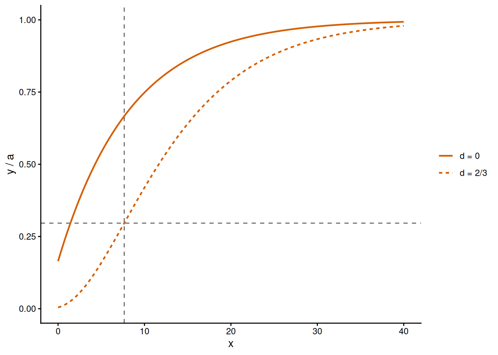
von Bertalanffy functions with b = 0.12 and c = −1.5, as a fraction of the asymptote a: the simple form (solid line; d = 0) and the generalised form with d = 2/3 (dashed line). Dashed grey lines mark the inflection point of the generalised form, c + log(3)/b, and its value there, 8/27 of the asymptote.
ImportantPractice: length of a lizard
A paper gives the length of a lizard (cm, from snout to vent) as a function of its age \(x\) (years) as \(12-(12-3)\,e^{-0.4x}\). Find the parameters \(a\), \(b\) and \(c\) of the simple von Bertalanffy function, with their units. At which age does the lizard reach 90% of its final length?
TipSolution
The function is written with the length at hatching, \(y_0=3\) cm, so \(a=12\) cm and \(b=0.4\)/year. The parameter \(c\) follows from \(y_0=a\left(1-e^{bc}\right)\): \(e^{0.4c}=1-3/12=0.75\), so \(c=\log(0.75)/0.4\approx-0.72\) years. The function reaches 90% of its asymptote when \(e^{-b(x-c)}=0.1\), that is, at \(x=c+\log(10)/b\approx-0.72+5.76=5.04\) years.
6.3 Shepherd
\[
\begin{aligned}
\text{R}: &\quad \verb|a * x / (b + x^c)| \\
\text{Shape}: &\quad \text{increasing when } c < 1;\ \text{saturating when } c = 1;\ \text{unimodal when } c > 1 \\
\text{Domain}: &\quad x \geq 0 \\
\text{Range}: &\quad y \geq 0;\quad 0 \leq y < a \text{ when } c = 1 \\
\text{Parameters}: &\quad a \text{ (units of } y \text{ times units of } x^{c-1}\text{)};\quad
b \text{ (units of } x^c\text{)};\quad c = \text{exponent (no units)} \\
\text{At zero}: &\quad f(0) = 0,\ \text{slope } a/b \\
\text{At infinity}: &\quad \text{grows without bound when } c < 1;\ f(x) \to a \text{ when } c = 1;\ f(x) \to 0 \text{ when } c > 1 \\
\text{Special}: &\quad \text{when } c > 1,\ \text{maximum at } x = \left(b/(c-1)\right)^{1/c} \\
\text{Also written}: &\quad \dfrac{sx}{1 + (x/k)^c},\ \text{with } s = a/b \text{ and } k = b^{1/c}
\end{aligned}
\]
The Shepherd function is a Michaelis–Menten function in which the \(x\) of the denominator is raised to a power. It is used for the output of a population (recruits, seeds, the adults of the next generation) as a function of its density, when the strength of the competition among individuals is to be estimated from the data (Maynard Smith and Slatkin 1973; Brännström and Sumpter 2005). The exponent \(c\) sets that strength. With \(c=1\) the function is the Michaelis–Menten function and the output levels off. With \(c<1\) the output keeps increasing with density, and with \(c>1\) it declines at high density, as it does for the Ricker function; population ecologists call the two cases undercompensating and overcompensating density dependence. In fisheries the function generalises the Beverton–Holt curve, and it can be derived from a mortality of the young fish that depends on the initial size of their cohort (Quinn and Deriso 1999).
The function is
\[
f(x)=\frac{ax}{b+x^{c}},
\]
where \(c\) is the exponent and \(a\) and \(b\) are positive. The units of \(a\) and \(b\) depend on \(c\), which makes them hard to interpret, so we first look for landmarks. For small \(x\) the term \(x^c\) is negligible next to \(b\) and \(f(x)\approx(a/b)\,x\): the initial slope is \(a/b\). For large \(x\) the term \(b\) is negligible next to \(x^c\) and \(f(x)\approx ax^{1-c}\), which grows without bound when \(c<1\), equals \(a\) when \(c=1\) and tends to zero when \(c>1\). The quotient rule gives
When \(c\le1\) the numerator is positive for every \(x\) and the function increases throughout. When \(c>1\) the numerator is zero where \(x^c=b/(c-1)\), so the function has a maximum at
where the value follows from replacing \(x^c\) by \(b/(c-1)\) in the denominator.
The function is easier to read with the initial slope \(s=a/b\) and the scale \(k=b^{1/c}\) as parameters, which we obtain by dividing the numerator and the denominator by \(b\):
\[
f(x)=\frac{sx}{1+(x/k)^{c}}.
\]
In this reparameterisation\(k\) has the units of \(x\) and \(s\) those of \(y\) per unit of \(x\). At \(x=k\) the denominator equals 2 whatever the value of \(c\), so \(k\) is the density at which the output is half of what the initial slope alone would give, \(sk/2\). The exponent then decides what happens beyond \(k\), and the maximum for \(c>1\) is at \(k\,(c-1)^{-1/c}\).
6.3.1 Example: flour beetles in a jar
Suppose that the number of adult beetles that emerge from a jar of flour, as a function of the number of eggs \(x\) that were laid in it, is \(f(x)=8000x/(10000+x^2)\), a Shepherd function with \(c=2\). The initial slope is \(a/b=0.8\) adults per egg, the fraction of the eggs that become adults when there is no competition, and the scale is \(k=\sqrt{10000}=100\) eggs. The number of adults is highest at
which is \(sk/2=0.8\times100/2\). With 300 eggs the jar produces \(8000\times300/(10000+90000)=24\) adults. With \(c=1\) and the same initial slope and scale the function is the Michaelis–Menten function \(80x/(100+x)\), which gives 40 adults for 100 eggs as well and 60 adults for 300 eggs. We can verify our math with R:
# Shepherd function: parameters a and b and exponent cshepherd =function(x, a =1, b =1, c =1) { a * x / (b + x^c)}# Location and height of the maximum on a fine grid of numbers of eggsegg_grid =seq(0, 1000, by =0.01)adult_values =shepherd(egg_grid, a =8000, b =10000, c =2)egg_grid[which.max(adult_values)]
[1] 100
max(adult_values)
[1] 40
# Adults from 100 and from 300 eggsshepherd(x =c(100, 300), a =8000, b =10000, c =2)
[1] 40 24
# The same function written with the initial slope s = 0.8 and the scale k = 1000.8*c(100, 300) / (1+ (c(100, 300) /100)^2)
[1] 40 24
# With c = 1 it is a Michaelis–Menten function with asymptote 80 and half-maximum 100shepherd(x =c(100, 300), a =80, b =100, c =1)
[1] 40 60
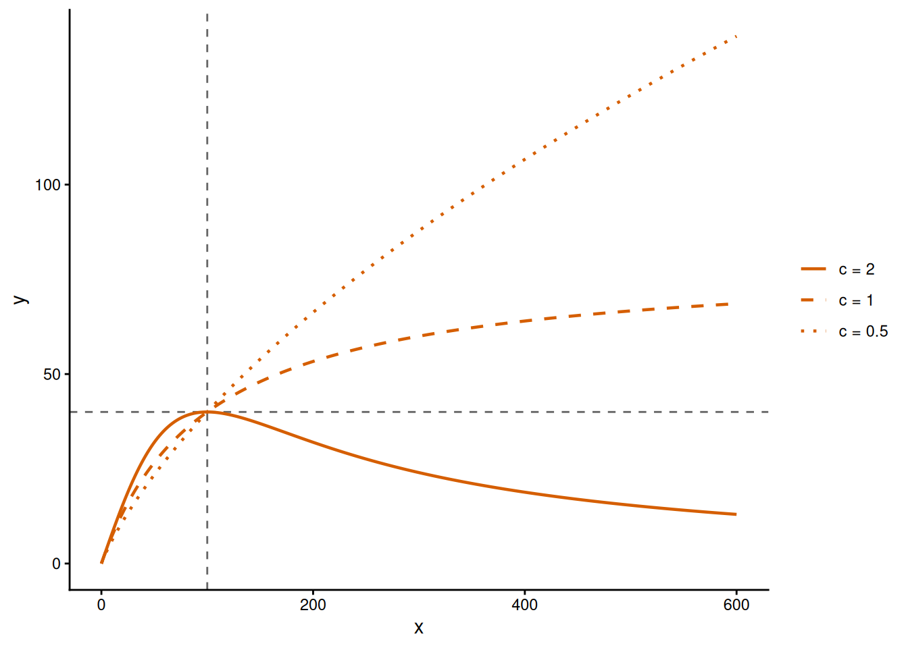
Shepherd functions with an initial slope s = 0.8 and a scale k = 100, for c = 0.5 (dotted line), c = 1 (dashed line; a Michaelis–Menten function) and c = 2 (solid line). Dashed grey lines mark the scale k and the value sk/2 = 40 that the three functions have there.
ImportantPractice: biomass of a crop and sowing density
The biomass of a crop (kg/m²) as a function of the density at which it was sown, \(x\) (thousands of seeds/m²), is described by \(f(x)=24x/(16+x^3)\). What is the initial slope of this Shepherd function? At which sowing density is the biomass highest, and how high is it there? What does the function do at very high densities?
TipSolution
The initial slope is \(a/b=24/16=1.5\) kg per thousand seeds. The exponent is \(c=3\), which is larger than 1, so the function has a maximum at \(x_{\max}=\left(b/(c-1)\right)^{1/c}=(16/2)^{1/3}=2\) thousand seeds/m², where it equals \(24\times2/(16+8)=2\) kg/m². For large \(x\) the function is close to \(ax^{1-c}=24/x^2\), so the biomass tends to zero at very high densities.
6.4 Hassell
\[
\begin{aligned}
\text{R}: &\quad \verb|a * x / (b + x)^c| \\
\text{Shape}: &\quad \text{increasing when } c < 1;\ \text{saturating when } c = 1;\ \text{unimodal when } c > 1 \\
\text{Domain}: &\quad x \geq 0 \\
\text{Range}: &\quad y \geq 0;\quad 0 \leq y < a \text{ when } c = 1 \\
\text{Parameters}: &\quad a \text{ (units of } y \text{ times units of } x^{c-1}\text{)};\quad
b \text{ (units of } x\text{)};\quad c = \text{exponent (no units)} \\
\text{At zero}: &\quad f(0) = 0,\ \text{slope } a/b^c \\
\text{At infinity}: &\quad \text{grows without bound when } c < 1;\ f(x) \to a \text{ when } c = 1;\ f(x) \to 0 \text{ when } c > 1 \\
\text{Special}: &\quad \text{when } c > 1,\ \text{maximum at } x = b/(c-1) \text{ and inflection point at } x = 2b/(c-1) \\
\text{Also written}: &\quad \dfrac{sx}{(1 + x/b)^c},\ \text{with } s = a/b^c \text{ the initial slope}
\end{aligned}
\]
The Hassell function is a Michaelis–Menten function in which the whole denominator is raised to a power. Hassell (1975) proposed it for the density dependence of populations with one generation per year, and it is used in the same way as the Shepherd function, from which it differs in where the exponent is placed (see also Brännström and Sumpter 2005). The exponent \(c\) again sets the strength of the competition: the output keeps increasing with density when \(c<1\), levels off when \(c=1\) and declines at high density when \(c>1\). The function is mostly used phenomenologically, to let the data decide among these three cases.
The function is
\[
f(x)=\frac{ax}{(b+x)^{c}},
\]
where \(c\) is the exponent, \(b\) has the units of \(x\) and \(a\) has units that depend on \(c\). For small \(x\) the denominator is close to \(b^c\), so the initial slope is \(a/b^c\). For large \(x\) the denominator is close to \(x^c\) and \(f(x)\approx ax^{1-c}\), which gives the same three cases as for the Shepherd function. The quotient rule, with the chain rule for the denominator, gives
which is a maximum, and the numerator of the second derivative is zero at \(x=2b/(c-1)\), an inflection point on the way down. As for the Ricker function, the inflection point is at twice the location of the maximum. The value of the maximum follows from \(b+x_{\max}=bc/(c-1)\); for \(c=2\) it is \(a/(4b)\) and for \(c=3\) it is \(4a/(27b^2)\).
The resemblance to the Ricker function has a reason. With the initial slope as a parameter the function is
and if we let \(c\) grow while we keep the ratio \(c/b\) at a fixed value \(\beta\), the term \((1+\beta x/c)^{-c}\) tends to \(e^{-\beta x}\). So the Hassell function has the Michaelis–Menten function at one end of its range (\(c=1\)) and approaches the Ricker function \(sxe^{-\beta x}\) at the other.
6.4.1 Example: larvae that compete for food
Suppose that the number of adult flies that emerge per gram of food, as a function of the density of larvae \(x\) (larvae/g), is \(f(x)=800x/(10+x)^3\). The exponent is \(c=3\) and \(b=10\) larvae/g. The initial slope is \(a/b^c=800/1000=0.8\) adults per larva. The number of adults is highest at
and the inflection point is at \(2\times10/(3-1)=10\) larvae/g, where the function gives \(800\times10/20^3=1\) adult/g. At 40 larvae/g it gives \(800\times40/50^3\approx0.26\) adults/g. We can verify our math with R:
# Hassell function: parameters a and b and exponent chassell =function(x, a =1, b =1, c =1) { a * x / (b + x)^c}# Location and height of the maximum on a fine grid of densitieslarva_grid =seq(0, 200, by =0.001)adult_values =hassell(larva_grid, a =800, b =10, c =3)larva_grid[which.max(adult_values)]
[1] 5
max(adult_values)
[1] 1.185185
# Adults per gram at 5, 10 and 40 larvae/ghassell(x =c(5, 10, 40), a =800, b =10, c =3)
[1] 1.185185 1.000000 0.256000
# Initial slope: D() and the formula a / b^chassell_derivative =D(expression(a * x / (b + x)^c), "x")eval(hassell_derivative, list(a =800, b =10, c =3, x =0))
[1] 0.8
800/10^3
[1] 0.8
# The second derivative is zero at the inflection pointeval(D(hassell_derivative, "x"), list(a =800, b =10, c =3, x =10))
[1] 0
# With a larger exponent and the same c / b = 0.3 and initial slope, the function# approaches the Ricker function 0.8 * x * exp(-0.3 * x): values at 5 larvae/g0.8*5/ (1+0.3*5/c(3, 30, 3000))^c(3, 30, 3000)
[1] 1.1851852 0.9255098 0.8928553
0.8*5*exp(-0.3*5)
[1] 0.8925206
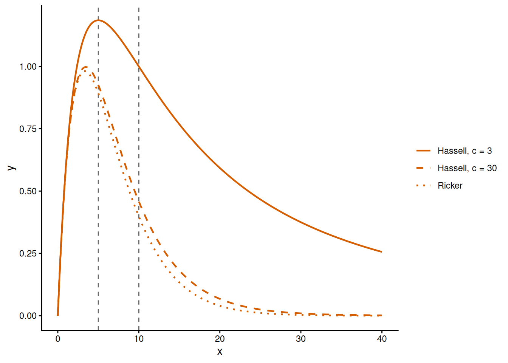
Hassell functions with an initial slope s = 0.8 and a ratio c/b = 0.3, for c = 3 (solid line; b = 10) and c = 30 (dashed line; b = 100), and the Ricker function with the same initial slope and a rate of 0.3 (dotted line), which the Hassell function approaches as c grows. Dashed grey lines mark the maximum and the inflection point of the solid curve, at b/(c − 1) = 5 and 2b/(c − 1) = 10.
ImportantPractice: a Hassell function with a given initial slope
A Hassell function has \(b=12\) plants/m² and \(c=4\). Where are its maximum and its inflection point? Which value of \(a\) gives an initial slope of 0.5 seeds per plant, and how high is the maximum then?
TipSolution
The maximum is at \(b/(c-1)=12/3=4\) plants/m² and the inflection point at twice that density, \(2b/(c-1)=8\) plants/m². The initial slope is \(a/b^c\), so \(a=0.5\times12^4=10368\). The maximum is then \(f(4)=10368\times4/16^4=41472/65536\approx0.63\) seeds/m², which is also what the formula gives: \(a\,(c-1)^{c-1}/(c^{\,c}b^{\,c-1})=10368\times27/(256\times1728)\approx0.63\).
6.5 Generalised Ricker
\[
\begin{aligned}
\text{R}: &\quad \verb|a * ((x / b) * exp(1 - x / b))^c| \\
\text{Shape}: &\quad \text{unimodal, of adjustable width} \\
\text{Domain}: &\quad x \geq 0 \\
\text{Range}: &\quad 0 \leq y \leq a \\
\text{Parameters}: &\quad a = \text{height of the peak (units of } y\text{)};\quad
b = \text{location of the peak (units of } x\text{)};\quad c = \text{exponent (no units)} \\
\text{At zero}: &\quad f(0) = 0;\ \text{slope } 0 \text{ when } c > 1,\ ae/b \text{ when } c = 1 \\
\text{At infinity}: &\quad f(x) \to 0,\ \text{slope} \to 0 \\
\text{Special}: &\quad \text{maximum at } x = b \text{ with value } a;\ \text{inflection points at } x = b\left(1 \pm 1/\sqrt{c}\right) \text{ (only the upper one when } c \leq 1\text{)} \\
\text{Also written}: &\quad a'x^{c}e^{-cx/b} \text{ with } a' = a\,(e/b)^{c};\quad
\text{with } c = 1,\ \text{the Ricker function } (ae/b)\,x\,e^{-x/b}
\end{aligned}
\]
The generalised Ricker function describes a response with a single peak whose location, height and width are three separate parameters. In the Ricker function one parameter controls both where the peak is and how fast the function declines beyond it, so a peak that is far from zero is necessarily wide; the exponent of the generalised function removes that link. Persson et al. (1998) used it for the attack rate of a predator as a function of its body mass, and in fisheries it has been proposed for the number of recruits as a function of the size of the spawning stock (Quinn and Deriso 1999). It is a phenomenological function. Chapter 5 uses it for the number of tadpoles killed as a function of their body length. Bellows (1981) proposed another generalisation of the Ricker function, in which the power is placed inside the exponential.
where \(a\) is the height of the peak, \(b\) is its location and \(c\) is a positive exponent. The term in brackets is a Ricker function that is written so that its maximum is at \(x=b\) and has a value of 1. The function is zero at \(x=0\), and it tends to zero as \(x\to\infty\) because the exponential dominates the power of \(x\). The derivative is easiest to find from the logarithm of the function, \(\log f(x)=\log a+c\left[\log(x/b)+1-x/b\right]\), whose derivative is \(f'(x)/f(x)\):
The slope is positive for \(x<b\), zero at \(x=b\) and negative for \(x>b\), whatever the value of \(c\): the maximum is at \(x=b\), where the term in brackets equals 1 and \(f(b)=a\). Differentiating once more with the product rule gives
which is zero where \(\sqrt{c}\,\left|1-x/b\right|=1\). So the inflection points are at
\[
x=b\left(1\pm\frac{1}{\sqrt{c}}\right),
\]
one on each side of the peak when \(c>1\). The distance between them, \(2b/\sqrt{c}\), is a measure of the width of the peak: a peak that is half as wide needs an exponent that is four times as large. When \(c\le1\) the lower value is zero or negative and is not an inflection point (with \(c=1\) it is \(x=0\), where the second derivative is \(-2ae/b^2\) and not zero), so the only inflection point is the upper one. With \(c=1\) it is at \(2b\), as for the Ricker function. Near its peak the function is close to the bell-shaped function with height \(a\), location \(b\) and width \(b/\sqrt{c}\).
With \(c=1\) the function is \((ae/b)\,xe^{-x/b}\), a Ricker function with an initial slope \(ae/b\) and a rate \(1/b\). For any \(c\) the function can be multiplied out to \(a'x^{c}e^{-cx/b}\) with \(a'=a\,(e/b)^{c}\), a power of \(x\) multiplied by an exponential, which is the form in which it is often printed.
6.5.1 Example: attack rate and body mass of a perch
Suppose that the volume of water that a perch clears of zooplankton (L/hour), as a function of its body mass \(x\) (g), follows a generalised Ricker function with \(a=3\) L/hour, \(b=20\) g and \(c=4\). The attack rate is highest, 3 L/hour, for a perch of 20 g. The inflection points are at \(20\,(1\pm1/\sqrt{4})\), that is, at 10 and 30 g, where the function gives
L/hour. The function is asymmetric: it rises more steeply than it falls. With \(c=1\) and the same \(a\) and \(b\) it would be the Ricker function with an initial slope \(ae/b\approx0.41\) L/hour/g, which gives 2.47 L/hour at 10 g and 2.73 at 30 g, a much wider peak. We can verify our math with R:
# Generalised Ricker function: height a and location b of the peak, exponent cgeneralised_ricker =function(x, a =1, b =1, c =1) { a * ((x / b) *exp(1- x / b))^c}# Attack rate (L/hour) at 10, 20 and 30 ggeneralised_ricker(x =c(10, 20, 30), a =3, b =20, c =4)
[1] 1.385448 3.000000 2.055405
# Location of the maximum on a fine grid of body massmass_grid =seq(0, 100, by =0.001)mass_grid[which.max(generalised_ricker(mass_grid, a =3, b =20, c =4))]
[1] 20
# The second derivative is zero (up to rounding error) at the inflection pointsricker_expression =expression(a * ((x / b) *exp(1- x / b))^c)ricker_second =D(D(ricker_expression, "x"), "x")eval(ricker_second, list(a =3, b =20, c =4, x =c(10, 30)))
[1] -5.204170e-18 -1.301043e-18
# With c = 1 it is a Ricker function with initial slope a * e / b and rate 1 / bgeneralised_ricker(x =c(10, 30), a =3, b =20, c =1)
[1] 2.473082 2.729388
(3*exp(1) /20) *c(10, 30) *exp(-c(10, 30) /20)
[1] 2.473082 2.729388
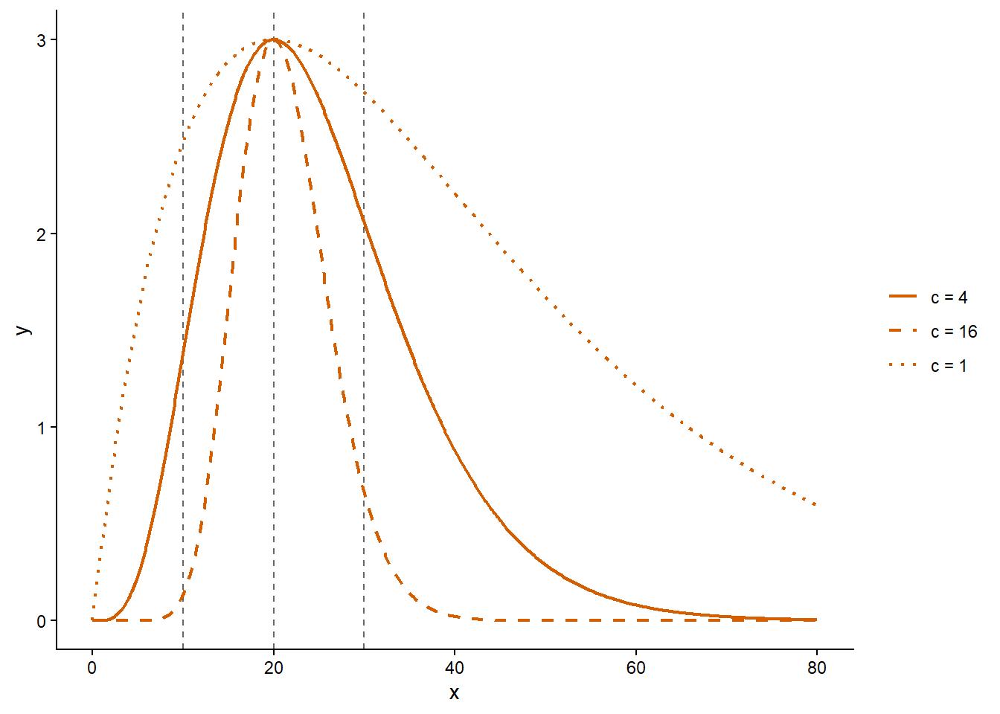
Generalised Ricker functions with a peak of height a = 3 at b = 20, for an exponent c = 1 (dotted line; a Ricker function), c = 4 (solid line) and c = 16 (dashed line). Vertical dashed lines mark the peak and the inflection points of the solid curve, at 10 and 30.
ImportantPractice: reading the exponent from a plot
The activity of a ground beetle (captures per trap per night) as a function of temperature is highest at 15 °C, where it is 50 captures, and a plot of the data suggests that the curve changes from convex to concave at 12 °C and back to convex at 18 °C. Find the parameters \(a\), \(b\) and \(c\) of a generalised Ricker function with these properties.
TipSolution
The height of the peak is \(a=50\) captures per trap per night and its location is \(b=15\) °C. The two values at which the curvature changes are the inflection points, \(b\,(1\pm1/\sqrt{c})\). Their distance from the peak is \(b/\sqrt{c}=3\) °C, so \(\sqrt{c}=15/3=5\) and \(c=25\). These are the values that we would use as starting values when fitting the function to the data (see Starting values by eye).
6.6 Non-rectangular hyperbola
\[
\begin{aligned}
\text{R}: &\quad \verb|(s + p_max - sqrt((s + p_max)^2 - 4 * theta * s * p_max)) / (2 * theta)|,\ \text{with } \texttt{s = alpha * x} \\
\text{Shape}: &\quad \text{saturating, with a bend of adjustable sharpness} \\
\text{Domain}: &\quad x \geq 0 \\
\text{Range}: &\quad 0 \leq y < p_{\max} \\
\text{Parameters}: &\quad \alpha = \text{initial slope (units of } y \text{ per unit of } x\text{)};\quad
p_{\max} = \text{asymptote (units of } y\text{)}; \\
&\quad \theta = \text{sharpness of the bend (no units)},\ 0 < \theta \leq 1 \\
\text{At zero}: &\quad f(0) = 0,\ \text{slope } \alpha \\
\text{At infinity}: &\quad f(x) \to p_{\max},\ \text{slope} \to 0 \\
\text{Special}: &\quad \text{at } x = p_{\max}/\alpha \text{ the function equals } p_{\max}/\left(1 + \sqrt{1 - \theta}\right) \\
\text{Also written}: &\quad \text{the smaller root } y \text{ of } \theta y^2 - (\alpha x + p_{\max})\,y + \alpha x\,p_{\max} = 0
\end{aligned}
\]
The non-rectangular hyperbola describes the rate of photosynthesis of a leaf as a function of the light that it receives. It is a saturating function with three parameters: the initial slope, the asymptote and the sharpness of the bend between the two. It is derived from principles of plant physiology (Thornley 2002), so it is a mechanistic function, and its parameters have their own symbols in that field: \(\alpha\) is the efficiency with which the leaf uses light when light is scarce, \(p_{\max}\) is the rate of photosynthesis when light is abundant and \(\theta\) is the sharpness. We keep these symbols here. In the terms of the Michaelis–Menten function, \(p_{\max}\) is the asymptote \(a\) and \(\alpha\) is the initial slope \(a/b\).
and the properties of the function are easier to derive from this equation than from the formula. If we move the term \((1-\theta)\,y^2\) to the right-hand side, the left-hand side can be factorised:
The two factors on the left are the distances from \(y\) to the straight line \(\alpha x\) and to the plateau \(p_{\max}\). This form shows the two extremes of the function. When \(\theta=1\) the right-hand side is zero, so one of the two factors has to be zero: \(y\) is either on the line or on the plateau, and the smaller root is \(\min(\alpha x,p_{\max})\), a hockey stick function with a breakpoint at \(x=p_{\max}/\alpha\). When \(\theta=0\) the quadratic term of the equation vanishes and what remains is \(\alpha x\,p_{\max}=\left(\alpha x+p_{\max}\right)y\), that is,
a Michaelis–Menten function with an asymptote \(p_{\max}\) and a half-maximum \(p_{\max}/\alpha\). (The formula itself cannot be evaluated at \(\theta=0\), as it divides by zero; the Michaelis–Menten function is its limit as \(\theta\to0\).) Both functions are therefore nested in the non-rectangular hyperbola, and values of \(\theta\) between 0 and 1 give curves between them.
The limits follow from the same form. At \(x=0\) the equation is satisfied by \(y=0\). For small \(x\) and \(y\), the term \(y^2\) is negligible and \(p_{\max}-y\approx p_{\max}\), so \(y\approx\alpha x\): the initial slope is \(\alpha\) for every \(\theta\). Dividing both sides by \(\alpha x\) gives \((1-y/(\alpha x))(p_{\max}-y)=(1-\theta)\,y^2/(\alpha x)\), whose right-hand side tends to zero as \(x\to\infty\) since \(y\) stays below \(p_{\max}\), so \(f(x)\to p_{\max}\).
The parameter \(\theta\) can be read at one particular value of \(x\). At \(x=p_{\max}/\alpha\), where the line \(\alpha x\) crosses the plateau, the equation becomes \(\theta y^2-2p_{\max}\,y+p_{\max}^2=0\), and its smaller root is
At this value of \(x\) the function is at half of its asymptote when \(\theta=0\), at two thirds when \(\theta=0.75\) and on the asymptote when \(\theta=1\). The sharpness is hard to estimate from data (Thornley 2002), because it only affects the function around the bend.
Leaves also respire, so that their net exchange of carbon dioxide is negative in the dark. This is described by subtracting the rate of respiration from the function, which is a shift along \(y\).
6.6.1 Example: photosynthesis of a leaf
Suppose that a leaf has \(\alpha=0.05\) µmol of carbon dioxide per µmol of light, \(p_{\max}=20\) µmol/m²/s and \(\theta=0.75\), with the light \(x\) in µmol/m²/s. The line and the plateau cross at \(x=p_{\max}/\alpha=20/0.05=400\) µmol/m²/s, where the rate of photosynthesis is
which lies between the 4 µmol/m²/s of the Michaelis–Menten function (\(5\times20/25\)) and the 5 of the hockey stick. We can verify our math with R:
# Non-rectangular hyperbola: initial slope alpha, asymptote p_max and sharpness thetanon_rectangular =function(x, alpha =1, p_max =1, theta =0.5) { (alpha * x + p_max -sqrt((alpha * x + p_max)^2-4* theta * alpha * x * p_max)) / (2* theta)}# Photosynthesis at a light of 100, 400 and 1500light_values =c(100, 400, 1500)non_rectangular(x = light_values, alpha =0.05, p_max =20, theta =0.75)
[1] 4.648162 13.333333 18.487920
# Value at x = p_max / alpha from the formula derived on paper20/ (1+sqrt(1-0.75))
[1] 13.33333
# A sharpness close to 0 gives the Michaelis–Menten functionnon_rectangular(x = light_values, alpha =0.05, p_max =20, theta =0.000001)
[1] 4.000001 10.000003 15.789476
20* light_values / (20/0.05+ light_values)
[1] 4.00000 10.00000 15.78947
# A sharpness of 1 gives the hockey stick functionnon_rectangular(x = light_values, alpha =0.05, p_max =20, theta =1)
[1] 5 20 20
pmin(0.05* light_values, 20)
[1] 5 20 20
# Initial slope: finite-difference slope at zero with a small step(non_rectangular(x =0.001, alpha =0.05, p_max =20, theta =0.75) -0) /0.001
[1] 0.04999997
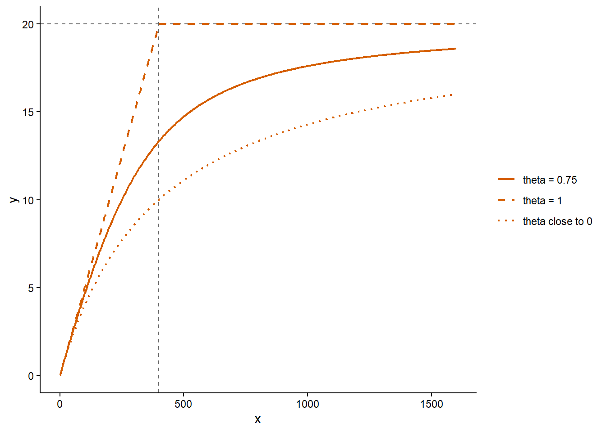
Non-rectangular hyperbolas with an initial slope α = 0.05 and an asymptote p_max = 20, for a sharpness θ close to 0 (dotted line; a Michaelis–Menten function), θ = 0.75 (solid line) and θ = 1 (dashed line; a hockey stick function). Dashed grey lines mark the asymptote and the value of x at which the line αx crosses it, p_max/α = 400.
ImportantPractice: the sharpness of a light response
The photosynthesis of a leaf approaches 30 µmol/m²/s in bright light and increases by 0.06 µmol of carbon dioxide per µmol of light when light is scarce. At which light does the straight line of the initial slope cross the asymptote? At that light the leaf is measured to photosynthesise at 80% of its asymptote. Which sharpness \(\theta\) does this correspond to?
TipSolution
The line crosses the asymptote at \(x=p_{\max}/\alpha=30/0.06=500\) µmol/m²/s. There the function equals \(p_{\max}/\left(1+\sqrt{1-\theta}\right)\), so \(1/\left(1+\sqrt{1-\theta}\right)=0.8\). This gives \(\sqrt{1-\theta}=1/0.8-1=0.25\) and \(\theta=1-0.25^2=0.9375\). A Michaelis–Menten function would be at 50% of its asymptote at this light and a hockey stick function at 100%.
6.7 Richards
\[
\begin{aligned}
\text{R}: &\quad \verb|a / (1 + d * exp(-b * (x - c)))^(1 / d)| \\
\text{Shape}: &\quad \text{sigmoid, of adjustable asymmetry} \\
\text{Domain}: &\quad \text{all } x \text{ when } d > 0;\quad x \geq c + \log(-d)/b \text{ when } -1 \leq d < 0 \\
\text{Range}: &\quad 0 < y < a \\
\text{Parameters}: &\quad a = \text{upper asymptote (units of } y\text{)};\quad
b = \text{rate (inverse units of } x\text{)}; \\
&\quad c = \text{inflection point (units of } x\text{)};\quad d = \text{shape (no units)},\ d \geq -1,\ d \neq 0 \\
\text{At zero}: &\quad f(0) = a/\left(1 + d\,e^{bc}\right)^{1/d} \\
\text{At infinity}: &\quad f(x) \to a \text{ as } x \to \infty;\quad f(x) \to 0 \text{ as } x \to -\infty \text{ when } d > 0 \\
\text{Special}: &\quad \text{inflection point at } x = c,\ \text{with value } a\,(1 + d)^{-1/d} \text{ and slope } ab\,(1 + d)^{-1/d - 1} \\
\text{Also written}: &\quad \text{logistic } (d = 1);\ \text{Gompertz } (d \to 0);\ \text{saturating exponential } (d = -1)
\end{aligned}
\]
The Richards function is a family of growth curves with an upper asymptote, in which a fourth parameter sets how asymmetric the curve is. Richards (1959) proposed it as a flexible function for the growth of plants, and it is used when neither the logistic nor the Gompertz function describes the data well, for example for the growth of individual plants (Damgaard et al. 2002). Its interest for this book is that it contains several of the functions of this supplement as special cases (Haefner 1996; Damgaard et al. 2002), so it shows how they are related. In general it is a phenomenological function, although particular values of the shape parameter give functions that have a mechanism. Other generalisations of the logistic function exist: Emlen (1996) raised \(x\) to a power inside the exponential, and Schnute (1981) proposed a growth function that is more general still.
where \(a\) is the upper asymptote, \(b\) is a rate, \(c\) is the location of the inflection point and \(d\) is the shape parameter. As for the Gompertz function we write \(u=e^{-b(x-c)}\), so that \(f(x)=a\,(1+du)^{-1/d}\). As \(x\to\infty\), \(u\to0\) and \(f(x)\to a\). When \(d>0\), \(u\) grows without bound as \(x\to-\infty\) and \(f(x)\to0\). When \(d\) is negative the term \(1+du\) reaches zero at \(u=-1/d\), so the function starts from zero at \(x=c+\log(-d)/b\) and is used from that value onwards.
The cases \(d=1\) and \(d=-1\) are found by substituting the value in the formula. For the Gompertz function we use the limit that defines the exponential function, \((1+du)^{1/d}\to e^{u}\) as \(d\to0\). For \(d=-1/3\) the function is \(a\left(1-\tfrac{1}{3}u\right)^{3}\), and since \(\tfrac{1}{3}e^{-b(x-c)}=e^{-b(x-c')}\) with \(c'=c-\log 3/b\), this is the generalised von Bertalanffy function that starts at \(c'\). Note that the parameters \(a\), \(b\) and \(c\) keep their meaning along the whole family.
where the last step uses \(1+du=\left(a/f(x)\right)^{d}\). For \(d=1\) this is the derivative of the logistic function, \(b\,f(x)\left(1-f(x)/a\right)\). Differentiating the last expression once more with the product rule:
Since \(f'(x)\) is positive, the second derivative is zero only where \(\left(f(x)/a\right)^{d}=1/(1+d)\). This happens where \(1+du=1+d\), that is, where \(u=1\) and \(x=c\). So for every \(d>-1\) the inflection point is at \(x=c\), and
The shape parameter therefore decides at which fraction of the asymptote the function is steepest: the fraction increases with \(d\), from zero at \(d=-1\) through one half at \(d=1\) towards one for large \(d\). As for the other exponents of this group, \(d\) is hard to estimate from data.
6.7.1 Example: growth of an annual plant
Suppose that the dry mass of a plant (g) as a function of the time since emergence \(x\) (days) follows a Richards function with \(a=50\) g, \(b=0.1\)/day, \(c=30\) days and \(d=0.5\). The plant grows fastest at 30 days, when its mass is
that is, 44% of its final mass, and it then grows by \(ab\,(1+d)^{-1/d-1}=50\times0.1/1.5^3\approx1.48\) g/day. At emergence its mass is \(50/\left(1+0.5\,e^{3}\right)^{2}\approx0.41\) g, and after 60 days it is \(50/\left(1+0.5\,e^{-3}\right)^{2}\approx47.6\) g. With the same \(a\), \(b\) and \(c\), a logistic function would give 25 g at 30 days and a Gompertz function \(50/e\approx18.4\) g. We can verify our math with R:
# Richards function: upper asymptote a, rate b, inflection point c and shape drichards =function(x, a =1, b =1, c =0, d =1) { a / (1+ d *exp(-b * (x - c)))^(1/ d)}# Dry mass (g) at emergence, at 30 days and at 60 daysrichards(x =c(0, 30, 60), a =50, b =0.1, c =30, d =0.5)
[1] 0.4100285 22.2222222 47.6006078
# Slope at the inflection point: D() and the formula a * b * (1 + d)^(-1 / d - 1)richards_derivative =D(expression(a / (1+ d *exp(-b * (x - c)))^(1/ d)), "x")eval(richards_derivative, list(a =50, b =0.1, c =30, d =0.5, x =30))
[1] 1.481481
50*0.1* (1+0.5)^(-1/0.5-1)
[1] 1.481481
# The second derivative is zero (up to rounding error) at the inflection pointeval(D(richards_derivative, "x"), list(a =50, b =0.1, c =30, d =0.5, x =30))
[1] 0
# Special cases at 10, 30 and 45 days: d = 1 is the logistic functiondays =c(10, 30, 45)richards(x = days, a =50, b =0.1, c =30, d =1)
[1] 5.960146 25.000000 40.878724
logistic(x = days, a =50, b =0.1, c =30)
[1] 5.960146 25.000000 40.878724
# A shape parameter close to 0 gives the Gompertz functionrichards(x = days, a =50, b =0.1, c =30, d =0.000001)
[1] 0.03089979 18.39398126 40.00053665
gompertz(x = days, a =50, b =0.1, c =30)
[1] 0.03089895 18.39397206 40.00053565
# d = -1 is the saturating exponential function that starts at c (here from 30 days)richards(x =c(30, 45, 60), a =50, b =0.1, c =30, d =-1)
[1] 0.00000 38.84349 47.51065
saturating_exponential(x =c(30, 45, 60) -30, a =50, b =0.1)
[1] 0.00000 38.84349 47.51065
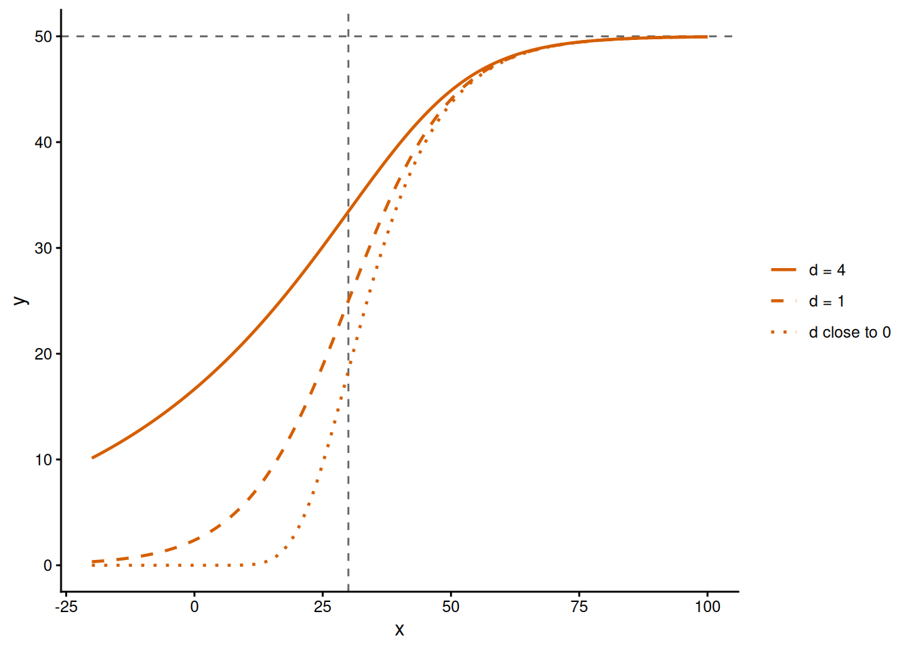
Richards functions with a = 50, b = 0.1 and c = 30, for a shape parameter d close to 0 (dotted line; a Gompertz function), d = 1 (dashed line; a logistic function) and d = 4 (solid line). The dashed grey line marks the inflection point, which is at x = c for the three functions; the value of the function there increases with d.
ImportantPractice: the shape parameter and the inflection point
The number of breeding pairs in a colony of seabirds follows a Richards function with \(a=200\) pairs, \(b=0.3\)/year, \(c=10\) years and \(d=2\). How large is the colony when it grows fastest, as a number of pairs and as a fraction of its final size? How fast does it grow then? Compare the fraction with that of a logistic function.
TipSolution
The colony grows fastest at the inflection point, \(x=c=10\) years. Its size is then \(a\,(1+d)^{-1/d}=200\times3^{-1/2}\approx115\) pairs, a fraction \(3^{-1/2}\approx0.58\) of its final size, and it grows by \(ab\,(1+d)^{-1/d-1}=200\times0.3\times3^{-3/2}\approx11.5\) pairs/year. A logistic function (\(d=1\)) is steepest at half of its asymptote, so with \(d=2\) the fastest growth comes later in the approach to the asymptote.
7 Functions without a closed form
Every function of this supplement is given by a formula: for any value of \(x\) and of the parameters we can calculate \(f(x)\) directly. Such a formula is called a closed form. Some functions that are used in ecology are defined by an equation that \(f(x)\) has to satisfy, and for some of these equations no formula for the solution exists in terms of the functions that we have used here. The value of the function then has to be calculated numerically for each value of \(x\), for example by finding a root with uniroot(). This book does not use such functions, so we only name the two that are met most often.
The Rogers random-predator equation describes the number of prey that a predator eats during an experiment in which the prey that have been eaten are not replaced, so that their density declines while the experiment runs (Rogers 1972; Juliano 1993). It starts from the same assumptions as the disc equation, but the number of prey eaten appears on both sides of the resulting equation and cannot be isolated. Its solution can be written with a special function, the Lambert W function (Corless et al. 1996).
The theta-logistic model generalises the model of population growth that leads to the logistic function: the growth rate per individual declines with the density of the population raised to a power \(\theta\) (Nelder 1961; Richards 1959; Thomas et al. 1980; Sibly et al. 2005). It is defined by an equation for the growth rate of the population, it is usually solved numerically, and it is often listed among the functions without a closed form. It does have one: the derivative of the Richards function, \(f'(x)=(b/d)\,f(x)\left[1-(f(x)/a)^{d}\right]\), is this model with a carrying capacity \(a\), a growth rate \(b/d\) and an exponent \(\theta=d\), so the Richards function is its solution.
8 References
Adler (2004), Modeling the Dynamics of Life: Calculus and Probability for Life Scientists, 2nd edition, Brooks/Cole.
Anderson and May (1991), Infectious Diseases of Humans: Dynamics and Control, Oxford Science Publications.
Bacon and Watts (1971), “Estimating the transition between two intersecting straight lines”, Biometrika 58: 525–534.
Bacon and Watts (1974), “Using a hyperbola as a transition model to fit two-regime straight-line data”, Technometrics 16: 369–373.
Barrowman and Myers (2000), “Still more spawner–recruitment curves: the hockey stick and its generalizations”, Canadian Journal of Fisheries and Aquatic Sciences 57: 665–676.
Bellows (1981), “The descriptive properties of some models for density dependence”, Journal of Animal Ecology 50: 139–156.
Beverton and Holt (1957), On the Dynamics of Exploited Fish Populations, Fishery Investigations Series II, volume 19, Ministry of Agriculture, Fisheries and Food, London.
Brännström and Sumpter (2005), “The role of competition and clustering in population dynamics”, Proceedings of the Royal Society B 272: 2065–2072.
Chen (2004), “Multiple periodic solutions of delayed predator–prey systems with type IV functional responses”, Nonlinear Analysis: Real World Applications 5: 45–53.
Collings (1997), “The effects of the functional response on the bifurcation behavior of a mite predator–prey interaction model”, Journal of Mathematical Biology 36: 149–168.
Corless, Gonnet, Hare, Jeffrey and Knuth (1996), “On the Lambert W function”, Advances in Computational Mathematics 5: 329–359.
Damgaard, Weiner and Nagashima (2002), “Modelling individual growth and competition in plant populations: growth curves of Chenopodium album at two densities”, Journal of Ecology 90: 666–671.
Emlen (1996), “Artificial selection on horn length–body size allometry in the horned beetle Onthophagus acuminatus (Coleoptera: Scarabaeidae)”, Evolution 50: 1219–1230.
Essington, Kitchell and Walters (2001), “The von Bertalanffy growth function, bioenergetics, and the consumption rates of fish”, Canadian Journal of Fisheries and Aquatic Sciences 58: 2129–2138.
Etienne, Apol and Olff (2006), “Demystifying the West, Brown & Enquist model of the allometry of metabolism”, Functional Ecology 20: 394–399.
Forsythe, Malcolm and Moler (1977), Computer Methods for Mathematical Computations, Prentice Hall.
Framstad, Stenseth, Bjørnstad and Falck (1997), “Limit cycles in Norwegian lemmings: tensions between phase-dependence and density-dependence”, Proceedings of the Royal Society B 264: 31–38.
Gompertz (1825), “On the nature of the function expressive of the law of human mortality, and on a new mode of determining the value of life contingencies”, Philosophical Transactions of the Royal Society of London 115: 513–583.
Grenfell et al. (1998), “Noise and determinism in synchronized sheep dynamics”, Nature 394: 674–677.
Haefner (1996), Modeling Biological Systems: Principles and Applications, Kluwer.
Halley et al. (2004), “Uses and abuses of fractal methodology in ecology”, Ecology Letters 7: 254–271.
Hassell (1975), “Density-dependence in single-species populations”, Journal of Animal Ecology 44: 283–295.
Hilborn and Mangel (1997), The Ecological Detective, Princeton University Press.
Holling (1959), “Some characteristics of simple types of predation and parasitism”, The Canadian Entomologist 91: 385–398.
Holt (1983), “Optimal foraging and the form of the predator isocline”, American Naturalist 122: 521–541.
Juliano (1993), “Nonlinear curve fitting: predation and functional response curves”, pages 159–182 in Scheiner and Gurevitch (editors), Design and Analysis of Ecological Experiments, Chapman & Hall.
Maynard Smith and Slatkin (1973), “The stability of predator–prey systems”, Ecology 54: 384–391.
Michaelis and Menten (1913), “Die Kinetik der Invertinwirkung”, Biochemische Zeitschrift 49: 333–369.
Mitzenmacher (2003), “A brief history of generative models for power laws and lognormal distributions”, Internet Mathematics 1: 226–251.
Monod (1949), “The growth of bacterial cultures”, Annual Review of Microbiology 3: 371–394.
Monsi and Saeki (1953), “Über den Lichtfaktor in den Pflanzengesellschaften und seine Bedeutung für die Stoffproduktion”, Japanese Journal of Botany 14: 22–52. Translated into English in Annals of Botany 95: 549–567 (2005).
Morris (1997), “Disentangling effects of induced plant defenses and food quantity on herbivores by fitting nonlinear models”, American Naturalist 150: 299–327.
Nelder (1961), “The fitting of a generalization of the logistic curve”, Biometrics 17: 89–110.
Niklas (1993), “The allometry of plant reproductive biomass and stem diameter”, American Journal of Botany 80: 461–467.
Pacala and Silander (1987), “Neighborhood interference among velvet leaf, Abutilon theophrasti, and pigweed, Amaranthus retroflexus”, Oikos 48: 217–224.
Pacala and Silander (1990), “Field tests of neighborhood population dynamic models of two annual weed species”, Ecological Monographs 60: 113–134.
Persson, Leonardsson, de Roos, Gyllenberg and Christensen (1998), “Ontogenetic scaling of foraging rates and the dynamics of a size-structured consumer–resource model”, Theoretical Population Biology 54: 270–293.
Post, Stenseth, Peterson, Vucetich and Ellis (2002), “Phase dependence and population cycles in a large-mammal predator–prey system”, Ecology 83: 2997–3002.
Quinn and Deriso (1999), Quantitative Fish Dynamics, Oxford University Press.
Richards (1959), “A flexible growth function for empirical use”, Journal of Experimental Botany 10: 290–301.
Ricker (1954), “Stock and recruitment”, Journal of the Fisheries Research Board of Canada 11: 559–623.
Rogers (1972), “Random search and insect population models”, Journal of Animal Ecology 41: 369–383.
Rosenheim and Rosen (1991), “Foraging and oviposition decisions in the parasitoid Aphytis lingnanensis: distinguishing the influences of egg load and experience”, Journal of Animal Ecology 60: 873–893.
Royama (1992), Analytical Population Dynamics, Chapman & Hall.
Schnute (1981), “A versatile growth model with statistically stable parameters”, Canadian Journal of Fisheries and Aquatic Sciences 38: 1128–1140.
Sibly, Barker, Denham, Hone and Pagel (2005), “On the regulation of populations of mammals, birds, fish, and insects”, Science 309: 607–610.
Skellam (1951), “Random dispersal in theoretical populations”, Biometrika 38: 196–218.
Thomas, Pomerantz and Gilpin (1980), “Chaos, asymmetric growth and group selection for dynamical stability”, Ecology 61: 1312–1320.
Thornley (2002), “Instantaneous canopy photosynthesis: analytical expressions for sun and shade leaves based on exponential light decay down the canopy and an acclimated non-rectangular hyperbola for photosynthesis”, Annals of Botany 89: 451–458.
Tjørve (2003), “Shapes and functions of species–area curves: a review of possible models”, Journal of Biogeography 30: 827–835.
Toms and Lesperance (2003), “Piecewise regression: a tool for identifying ecological thresholds”, Ecology 84: 2034–2041.
Turchin (2003), Complex Population Dynamics: A Theoretical/Empirical Synthesis, Princeton University Press.
Verhulst (1838), “Notice sur la loi que la population suit dans son accroissement”, Correspondance mathématique et physique 10: 113–121.
von Bertalanffy (1938), “A quantitative theory of organic growth (Inquiries on growth laws. II)”, Human Biology 10: 181–213.
Wilmshurst, Fryxell and Colucci (1999), “What constrains daily intake in Thomson’s gazelles?”, Ecology 80: 2338–2347.
Wood (2006), Generalized Additive Models: An Introduction with R, Chapman & Hall/CRC.
Footnotes
The extrapolation of census counts with a polynomial is a well-known exercise on this problem; see Forsythe, Malcolm and Moler (1977).↩︎
The function is named after Gompertz, who proposed in 1825 a law of human mortality in which the death rate increases exponentially with age over much of adult life; see Gompertz (1825).↩︎